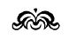

Masalımsı Bir Gece

Aşağıdaki notlar, 1914 güzünde, bir Avusturya hafif süvari alayı yedek üst teğmeni olarak katıldığı Rawaruska savaşında vurulan baron Friedrich Micail von R...’in yazı masasında, mühürlü bir pakette bulundu. Sayfalara ve başlığa bakıp, bunları sadece bir edebiyat çalışması sanan ailesi, gözden geçirip yayınlayayım diye bana verdi. Bana kalırsa bu sayfadakiler uydurma değil, savaşta ölmüş bir insanın gerçekten başından geçmiş şeylerdi. İç dünyasını ortaya döken bu notları, adını gizleyerek, hiç değiştirmeden ve bir şey katmadan yayınlıyorum.
O masalımsı gecede başımdan geçenleri, bütün olayları sırasıyla toparlayıp bir göz atayım isteğine kapıldım bu sabah. O andan sonra da bu serüveni yazıyla canlandırmak için anlatılmaz bir duygu beslemeye başladım. Olup bitenlerin akıl almazlığını az buçuk anlatabileceğimden kuşku duymuyor da değilim. Sanat yeteneği denen şeyden yoksunum, edebiyatla hiç uğraşmışlığım yok. Theresianum lisesinde daha çok laf olsun diye yaptığım bir iki karalamadan başka yazarlığı bir gün bile denemedim. Sözgelişi, dış olaylarla birlikte gelişen iç yansıları sırasınca düzenlemeyi öğreten özel bir metot var mıdır, bilmem! Anlama tam uygun bir söz, söze de tam anlamını bularak bir denge nasıl sağlanır diye kendime hep sormuşumdur. Yine de her gerçek öyküde bunun hep böyle olduğunu bilinç altından sezerim.
Ne var ki, ben bu satırları sadece kendim için yazıyorum. Bu satırlar, kendime bile açıklayamadığım bir şeyi başkalarına anlatsın diye yazılmadı. Yakamı hiç bırakmayıp, acı veren bir kaynayışla içimi kabartan bir algılamayla karşısına geçip, bütünlüğü ile kavrayayım, hiç değil şöyle bir kurtulayım diye yapılmış bir deneme.
Bu olup bitenleri hiçbir dostuma açmadım. Çünkü en önemli yanını anlatabileceğimi sanmıyorum. Böylesine bir rastlantı nedeniyle bu kadar sarsılıp, allak bullak olmaktan ne de olsa utanıyorum. Çünkü gerçekte büyük olay küçücük bir yaşantı. Fakat bunu şimdi buraya yazarken, yazıda sözleri yerli yerinde kullanmanın bir acemiye nasıl da zor geleceğini, en kolay bir sözün bile başka anlamlara, yanlış anlaşmalara yol açabileceğini kavramaya başlıyorum. Çünkü başımdan geçene “küçük” derken, milletlerin gidişine yön veren büyük heyecanlı olaylarla karşılaştırıp, zaman bakımından hepsi hepsi altı saate sığmış olduğunu düşünüyorum. Fakat geniş anlamı ile böyle önemsiz ve sudan bir olay o derece büyüktü ki –o masalımsı geceden dört ay sonr –, hâlâ heyecanlıyım ve onu içimde korumak için bütün moral güçlerimi zorlamam gerekiyor. Her gün, her saat onu tüm ayrıntıları ile kendi kendime tekrarlıyorum. Çünkü kendi varlığım için bir bakıma dönüm noktası oldu. Ne yapsam, ne söylesem, bilinç dışı bir güçle hep onun etkisindeyim. Aklım fikrim, o tepeden inme olayı hep tekrarlamak ve bu tekrarlayışla onu elimde tutmak.
On dakika önce kalemi elime aldığımda bilemediğimi şimdi kavradım. Başımdan geçenleri buraya yazmam, bile bile ve olduğu gibi yazmış olarak gözden geçirmek, yeniden duyup, tadına vararak anlamına akıl erdirmek için. Bunları yazmakla bir yükten kurtulmak istediğimi az önce söyledim, fakat hiç doğru değil. Bunun tam tersi. Ben sadece pek hızlı yaşadıklarımı daha canlı elde etmek, sıcaklığı ve soluk alışı ile yanı başımda bulmak, onu hep ve hep çevremde görmek istiyorum.
Hiç korkmuyorum. O bunaltıcı öğle sonrasının, o masalımsı gecenin bir saniyesini bile yitirmeyeceğim. O saatleri anılarımda adım adım yeniden yaşamak için ne bir işaret, ne de kilometre taşları gerekir bana. Gece olsun, gündüz olsun her an ve bir rüyada gezer gibi –zayıf hafızamın değil de ancak gönlümün başarabileceği bir kavrayışla– kendimi o anların ortasında bulabiliyorum. Bir ilkbahar yeşilliğine bürünmüş doğadaki her yaprağı tüm kıvrımları ile kağıda çizebilirim. Kestane çiçeklerinin hoş ve tozlu buğusunu şu sonbaharda hâlâ bütün yumuşaklığı ile duyuyorum. O saatleri şimdi yeniden anlatmam onları yitirmek korkusundan değil, yeninden bulma sevincinden. O gece olup bitenleri şimdi tam sırası ile anlatırken düzeni bozmamak için kendimi zorluyorum. Çünkü o ayrıntıları düşünür düşünmez duygularım coşuyor, bir sarhoşluğa kaptırıyorum kendimi. Anıları, renkli bir çağlayan gibi birbirine karışmaması için sıraya koymam gerekiyor.
Başımdan geçenleri heyecanla, ihtirasla yeniden yaşıyorum hep: Günlerden 8 Haziran 1913 idi... Öğle üzeri bir arabaya bindim.
Fakat burada bir ara vermem gerekiyor. Çünkü tek bir sözün çok anlamlılığını, iki taraflı kesiciliğini dehşetle bir daha fark ediyorum. Parmaklarımın arasından kayıp gitmesine ve canlılığını koruyabilme zorluğuna karşın, ilk kez derli toplu bir şey anlatmak istediğimi şu sıra kavrıyorum.
Az önce”ben” diye yazdım ve 8 Haziran 1913’de öğle üzeri bir arabaya bindiğimi söyledim. Fakat bu “ben” sözü anlamını yitirdi. Çünkü o günlerin 8 Haziranının “ben”i değildim çoktan. O günlerdeki “ben”in evinde oturmama, masa başında onun eli ve kalemi ile yazmama karşın. Hem başımdan geçenler nedeniyle o günlerin “ben”i hiç değildim. Ona uzaktan yabancı ve soğuk bakıyordum. Onun üzerine çok ve önemli şeyler bilmeme karşın dünkü “ben” ile hiç benzerliği olmayan bir arkadaş, bir oyun arkadaşı, bir dost gibi anlatabilirim onu. Onunla konuşur, onu paylar ve suçlayabilirim. O bir zamanki “ben” değilmişim gibi...
Bir zamanlar “ben” olan bu insan, özellikle bizim Viyana’da, herhangi olağanüstü bir övme ile değil, pek alışılmış bir deyişle “yüksek tabaka” denilen insanlardan –dış ve iç görünüşü ile– çok az değişikti. Otuzaltı yaşına basmıştım. Erken ölen anne ve babamın erginlik yaşımdan az önce bıraktığı miras, ekmek kazanmak ve bir iş tutmak düşüncelerinden beni yüzde yüz kurtarmıştı. Hiç beklenmedik bir anda böylece ağır bir yükten sıyrılmış ve tedirginliğim geçmişti. Çünkü tam da o sırada üniversiteyi bitirmiş, yarınımı hazırlayacak bir mesleğe karar vermeye hazırlanıyordum. Bizimkilerin yüklü serveti tek mirasçı olan bana kalıp da en aşırı, hatta lüks istekleri hiç çalışmadan karşılayacak durumu elde ettiğimde, çabasız bir yükseliş ve imrenilecek bir yaşayış sağlayan devlet hizmetini –beliren eğilimim ve aile ile ilişkilerimiz nedeniyle– seçmeye hazırlanıyordum.
Hiçbir zaman aşırı istekler peşinde koşmamışımdır. Bu nedenle de, beni çekecek bir çalışma alanı buluncaya dek birkaç yıl bekleyip hayatı tanımaya karar verdim. Fakat hayatı tanımak ve beklemekten öteye geçemedim. Hiçbir tutkum olmadığı için, aradığım her şeyi isteklerimin dar çevresinde buluyordum. Çünkü başka yerlere hiç benzemeyen incelikler ve eğlenceler kenti Viyana’da gezip tozmak, aylaklık, etrafa bakınmak, şıklık, tam bir sanat eşsizliği, hayatın amacı olmuştu. Gerçek çalışma alanı niyetimi büsbütün unutmuştum. İyi giyinen, soylu, varlıklı, yakışıklı, fakat aşırı istekleri olmayan bir genç adamın –oyun, avlanma, yolculuk ve gezintilerin yerli yerinde dinçleştirmeleri gibi– her çeşit zararsız keyfine kavuşmuştum. Bu imrenilecek hayatı çok geçmeden bir sanatçı eğilimi ve bilgili bir dikkatle gittikçe geliştirmeye başladım. İçimden gelen güçlü bir istekten çok bilgili ve hiç çabasız bir amaca ulaşabilmek sevinci ile az bulunur cam bardaklar topluyordum. Evimi bir çeşit İtalyan Barok stili masalar ve Canaletto üslûbunda manzara resimleri ile süslüyor, bunları koltukçularda, ya da açık arttırmalarda ele geçirmek için avlanmada olduğu gibi –ama yine de zararsız– heyecanları göze alıyordum. Bazı şeylere ince bir düşkünlük gösteriyor, önemli konserlerden, ressamlarımızın atölyelerinden hiç eksik olmuyordum. Kadınlardan yana da şansız sayılmazdım. İç dünyamın aylaklığından gelme o gizliden gizliye koleksiyon yapmak isteği ile, değerli pek çok anı, eşsiz yaşantı anları toplamış ve bu alanda da sadece bir eğlence düşkünü olmaktan kurtulup, bilgili uzmanlığa yükselmiştim. Günümü güzelleştiren ve hayatımı zenginleştiren ne varsa hemen hemen hep yaşamıştım. Canlılığı olduğu kadar sarsıntısız bu gençliğin ılık ve hoş havasını gittikçe daha sevmeye başlamıştım. Hemen hemen hiçbir isteğim yoktu. Ne de olsa günlerimin küçük bir yaprak bile kımıldamayan havasında en önemsiz şeylerden sevinç duyabiliyordum. İyi seçilmiş bir kravat beni hoşnut edebiliyordu. Güzel bir kitap, bir otomobil gezintisi, ya da bir kadınla geçen saatler sonsuz mutluluk getiriyordu bana. Bu yaşam tarzımın en hoşuma giden yanı kusursuz bir İngiliz elbisesi gibi hiç kimsenin gözüne çarpmamasıydı. Sanırım beni hoş bir görüntü sayıyorlardı. Hoşa gidiyor ve aranıyordum. Beni tanıyanlar mutlu bir insan olduğumu söylüyordu.
Gözümün önünde canlandırmaya çalıştığım o tarihlerin genç adamı, başkalarının düşündüğü gibi kendisini mutlu bulur muydu, şimdi artık kestiremiyorum. Çünkü o yaşantıdan her his için daha dolu ve yerine getirilmiş duyu arzuluyorum ve geçmişi anımsatan her değerlendirme hemen hemen olanak dışı görünüyor bana. Fakat o günlerimde kendimi hiç de bahtsız bulmadığımı yine kesinlikle söyleyebilirim. Çünkü bütün arzularım gerçekleşiyor ve hayat bana her istediğimi karşılıyor. Ancak bu da her isteğim karşılanmış ve hayattan artık bir isteğimin kalmamış olması da heyecanı gittikçe yitiriyor, cansız bir hayata yol açıyordu. O sıra tam bilememenin bazı anlarında beni –bilinç dışı bir özlemle –harekete geçiren şeyler gerçek istekler değil, daha güçlü, başı boş, ihtirasla ve doymadan arzulamak, daha çok yaşamak ve belki de daha çok acı çekmek isteği idi. Karşı koyacak her şeyi aşırı aklı başında bir teknikle varlığımdan atmıştım, fakat bunlardan yoksunluk da yaşama gücümü uyuşturmuştu. Arzularımın gittikçe azalıp, zayıfladığını duygularıma bir uyuşukluk getirdiğini ve –sanırım en uygun bir deyimle söylüyorum– ruhumda bir iktidarsızlık başladığını, hayatı ihtirasla korumasını beceremez olduğumu da görüyordum. Bu eksikliği önce küçük küçük belirtilerden fark ettim. Tiyatro ve sosyetenin gürültülü bazı gösterilerinden gittikçe uzak kaldığım dikkatimi çekti. Şunun bunun övdüğü kitapları aldıktan sonra elimi bile sürmeden haftalarca masada bırakıyordum. Eski meraklarımı alışkanlıkla sürdürüp, bardaklar ve antika eşya satın alıyordum, fakat bunları sonradan düzenlemiyor, çoktan aranan ve az bulunan bir parçayı hiç ummadığım bir anda ele geçirince pek seviniyordum.
Ruh gücümde baş gösteren bu değişiklik ve zayıflamayı fark ettiren olayı şimdi de iyice anımsarım. Yazı –hiçbir yeni şeye karşı heyecan duymayan o tuhaf gevşeklikten olacak– Viyana’da geçiriyordum. Tam o günlerde bir kaplıca kasabasında yaşayan bayan arkadaşımdan bir mektup alıverdim. Üç yıldır içli dışlı bağlılığım olan bu kadını gerçekten sevdiğimi sanıyordum. Heyecanlı satırlarla dolu on dört sayfalık mektubunda, orada geçirdiği haftalarda bir erkekle tanıştığını, sonbahara da onunla evleneceğini, aramızdaki bağın son bulması gerektiğini yazıyordu. Benimle geçirdiği yılları pişmanlıkla değil, mutlulukla anımsıyordu. Evlendikten sonra da beni unutmayıp, geçmiş günlerinin en güzel anısı sayacaktı. Bu ani kararı için kendisini bağışlayacağımı umuyordu. Heyecanlı mektupta bu gerçekçi açıklamalardan sonra gerçekten pek dokunaklı yalvarmalarla ona kızmamamı, bu ani ayrılış için çok üzülmememi, onu zorla vazgeçirmek, ya da herhangi bir çılgınlığa kalkışmak gibi davranışlardan kaçınmamı istiyordu. Gittikçe daha ateşli satırlar birbirlerini kovalıyordu. Daha ilginç başka bir kadınla avunmalı, ona da hemen yazmalıydım. Çünkü bu yazdıklarını nasıl karşılayacağımı bilmek istiyor, korkmuyor da değildi. En sonunda not olarak kurşun kalemle: “Bir çılgınlık yapma, beni anla ve bağışla!” diye yazmıştı aceleyle.
Mektubu, yazdıklarına önce şaşırarak okudum. Sonra ikinci okuyuşumda utanca benzer bir duygu içimi doldurdu. Durumu kavrayınca da korktuğumu hissettim. Çünkü sevgilimin çok olağan sayıp, yazdığı o sarsıcı duygulardan hiçbiri ruhumda en küçük bir kımıldamaya neden olmamıştı. Mektubuna hiç üzülmemiştim. Ona kızmamıştım da. Ona ve kendime karşı herhangi bir zorlama ya da kötülüğü de aklımdan geçirmemiştim. İçimi kaplayan böylesine buz gibi duygusuzluk olağanüstüydü. Hayatımın birçok yıllarında benimle beraber olmuş, sıcak vücudunun bütün kıvraklığı ile bana yaslanmış, uzun gecelerde soluğu soluğuma karışmış bir kadın benden kopuyordu da, benim kılım bile kıpırdamıyordu. Ben hiç direnmiyor, onu yeniden kazanmak için hiçbir şeye başvurmuyordum. Bu kadının temiz bir içgüdü ile gerçek insanda çok olağan saydığı o bir sürü şeyden hiçbiri yoktu benim duygularımda. İçimde başlayan uyuşmanın çok ilerlemiş olduğunu o gün fark ettim.
Akıp giden parlak sular üstünde kayıyor, hiçbir şeye tutunamıyor, kök salamıyordum. Bu soğuyuşta bir ölüşün, bir cesetleşmenin başladığını çok iyi biliyordum. Çürüyüşün kötü kokusu henüz çıkmamıştı, fakat önlenemeyecek bir uyuşma, bir katılaşma, korkunç ve buz gibi bir duygusuzluk, dış çöküşten öncenin, vücudun gerçek ölümünden önceki dakikalar başlamıştı. Kendimi ve içimdeki bu tuhaf duygu uyuşmasını o andan sonra, hastalığını ilgi ile izleyen bir hasta gibi dikkatle gözledim. O günden az sonra ölen bir dostumun tabutu arkasından yürürken kendime bir kulak verdim. Çocukluk günlerinden bu yana çok yakını olduğum bu insanı yitirmiş olmak bilincimde bir değişiklik yapmış mıydı, duygularım nasıldı? Hiçbir kıpırdanma yoktu. Olayları aydınlatıp da içine giremeyen camdan bir şey gibiydim. Bu ölüm nedeniyle ve buna benzer başka olaylarda biraz duygulanayım diye aklımı kullanarak duygulanmaya zorladım kendimi, fakat ruhum öyle taşlaşmıştı ki hiç karşılık bulamadım. İnsanlar yanımdan uzaklaşıyor, kadınlar geliyor ve gidiyorlardı. Ben ise odada oturup, pencerenin dışındaki yağmura bakan birinden daha fazlasını hissetmiyordum.
Çok yakınımda olan sonla, aramda camdan bir duvar vardı da, onu itecek gücü kendimde bulamıyor gibiydim.
Bunu açık açık hissetmeme karşın, çok tedirginleşmiyordum. Çünkü benimle doğrudan doğruya ilgili şeylere de boş veriyordum, az önce söylediğim gibi. Acı çekmeye yetecek duygu da kalmamıştı içimde. Bu ruh çöküntümü, güçsüzlüğü ortaya çıkan bir erkek örneği, başkalarından saklayabiliyordum. Ruhumun ilgisizlik ve uyuşukluğunu yakından tanıyordum, başkalarının arasında bulunurken yapmacık bir tutkuyu, duygulanmanın içten geliveren acıklılığı ile örtbas etmek istiyordum. Dış görünüşümle her zamanki rahat ve tasasız hayatımı, hiçbir yön değişikliği yapmadan yaşıyordum. Haftalar, aylar kayıp geçiyor, yıllar yılları kovalıyordu. Bir sabah aynaya bakıp, şakaklarımda bir kırlaşma görünce, gençliğimin yavaş yavaş bir başka dünyaya doğru yola çıktığını anladım. Başkalarının gençlik dediği şey beni bırakmıştı. Üzülmedim. Çünkü kendi gençliğimi yeterince sevmiş değildim. İnatçı duygusuzluğum buna da boş vermişti.
Bu iç durgunluğu, olayların ve oyalanmaların çeşitliliğine karşın günlerimi gittikçe tek düze yapmıştı. Günler sessizce birbirini kovalıyor, bir ağacın yapraklarıymış gibi gelişip sararıyordu.
Şimdi yeniden canlandırmak istediğim o tek bir gün de, hiçbir özelliksiz ve içerimde hiçbir ön belirtisiz başladı. O 8 Haziran 1913 günü erken uyanmıştım. Okul yıllarından benliğimde yer etmiş pazar günü duygusu vardı. Banyo yapıp, gazeteleri okudum, kitapları karıştırdım. Sonra da yakın bir dost gibi odama sokulan sıcak yaz güneşine kapılarak gezintiye çıktım. Alışkanlıkla önce Graben’de şöyle bir piyasa edip, tanışlarla, dostlarla selamlaştım, birkaçı ile ayaküstü çene çaldım. Daha sonra kimi dostlarla öğle yemeğine gittim. Öğleden sonrası için hiçbir şey kararlaştırmamıştım. Çünkü öğleden sonraları, hele pazarları, birkaç saati kendime ayırıp, serbestçe, keyfimce ya da rastgele bir şeyler yapmayı severdim.
Dostlarımdan ayrılıp, Ring caddesini geçerken güneşli kentin güzelliği pek hoşuma gitmiş, yaz başlangıcının renkliliği ile keyiflenmiştim. Bütün insanlar neşeliydi. Hepsi de caddenin göz alıcılığına tutkun gibiydi. Pek çok şey, hele taze yeşil yaprakları ile asfaltta yükselen ağaçlar ilgimi çekiyordu. Hemen her gün buradan geçmiş olmama karşın, bu pazar günü insan seli bana çok olağanüstü geliyordu. Elimde olmadan bol yeşilin, aydınlığın, renk cümbüşünün özlemini duydum. Prater’i biraz da merakla anımsadım. Bu bahar sonu ve yaz başlangıcı günlerde yüzyıllık ağaçlar, araba dolu geniş yolun iki yanında yeşil giysili iri-yarı uşaklar gibi hareketsiz durur, pırıl pırıl şık insanlara ak çiçekli yüreklerini uzatırlardı. En küçük bir isteğimi hemen yerine getirmek alışkanlığı ile rastladığım ilk arabacıya Prater’e götürmesini söyledim. Adam alışkanlıktan gelen bir olağanlıkla “yarışlara değil mi, Herr Baron?” karşılığını verdi. O zaman yarış programının bugün pek parlak olduğunu anımsadım. Bütün Viyana sosyetesi at yarışlarında buluşacaktı. Arabaya binerken, ne tuhaf, diye düşündüm. Daha birkaç yıl önce böyle bir günü nasıl kaçırır, ya da unutabilirdim! Kendimi kaptırdığım bu unutkanlık, bu her şeylere boş veriş uyuşukluğu, yarasını unutup, sert bir hareket yapan birisi gibi bir daha fark ettim.
Vardığımızda gezi yolu oldukça boştu. Yarış başlayalı çok olmalıydı. Her zamanki alacalı araba dizileri görünürlerde yoktu. Sadece üç, beş araba, elden kaçırdıkları bir görünmezi kovalar gibi dörtnala gidiyordu. Arabacı oturduğu yerden bana dönüp, daha hızlı sürsem mi, diye sordu. Hiç acelem olmadığını, atları rahat sürmesini söyledim. Pek çok yarış ve yarış yerinde insan görmüştüm. Biraz geç varmak umurumda değildi. Arabanın yumuşak sallanışında masmavi havayı –bir gemiden denizi seyredermiş gibi– tatlı bir hışırtı ile hissetmek, sıcak sıcak sokulan rüzgâra arada sırada birkaç çiçek düşüren geniş kümeli kestane ağaçlarını, çiçeklerin yere düşerken uçuşmasını seyretmek, içimi kaplayan gevşekliğe daha uygundu. Bir beşikte gibi böyle sallanmak, gözleri kapalı baharı hissetmek ve hiçbir çabasız taşınmış olmak duygusu haz veriyordu. Freudenau’ya varıp da, araba giriş yerinde durunca nedense biraz üzüldüm. Geriye dönüp bu yaz başlangıcı pazarının yumuşak kollarında yine sallanmayı istedim. Fakat geç olmuştu. Araba yarış yerinin önünde durmuştu. Tribünlerin arkasında bir denizin boğuk ve uğultulu çağıltısı vardı. Oradaki insanları göremiyordum.
Bir an için Ostende’i anımsadım. Çukurda kentin küçük yan sokaklarını kıyıdaki gezinti yoluna doğru tırmanırken –bakışlar, gümbürtülü dalgalar ve gri köpüklü sonsuzlukla henüz karşılaşmadan– tuzlu tuzlu ve keskin bir rüzgâr tepemde uğuldar, uzaktan uzağa boğuk bir gürültü duyulurdu. Yeni bir koşu başlamış olacaktı. Fakat atların ok gibi ileri atıldığı çayırla benim aramda –fırtınanın allak bullak ettiği bir sis gibi– alacalı bir uğultu, seyirciler ve müşterek bahis oynayanlar yığını vardı. Koşu pistini göremiyordum, fakat büyük heyecanı olduğu gibi yaşıyordum. Jokeyler koşuya başladığı anda insan yığını tribünlerden ileri atılmış, çekişmeler başlamış olacaktı. Benim göremediğim koşunun hareketliliğini yaşayanlardan heyecanlı sesler, haykırışlar yükseliyordu. Başlarının yönelmesine bakarak, atların ve jokeylerin şu anda koşu pistinin dönemecine varmış olduklarını sezdim. Kargaşalık gittikçe toparlanıp, birbirine sokuluyor, göremediği bir noktaya bakan tek bir boyun gibi uzanıyordu. Sonuna kadar uzanmış bir boyundan çıkan binlerce ve binlerce tek tek sesin uğultusu ve gürleyişi kıyıyı döven kocaman dalgalar gibiydi. Kıyıyı döven dalgaların uğultusu gittikçe yükselmeye, mavi göklere kadar her yanı kaplamaya başlamıştı. İnsan yüzlerinden birkaçını süzdüm. Bir iç çekişme ile kırış kırıştı yüzler. Her bir yere bakan gözler çakmak çakmak, dudaklar üzüntülü, çeneler hırsla ileriye çıkık, burun delikleri atlarda olduğu gibi kabarıktı. Böylesine kendinden geçmiş bu insanlara çekinerek bakmak hem eğlendirici, hem de korkunçtu. Yanı başımdaki bir koltuğa çıkmış iyi giyimli bir erkek hop oturup, hop kalkıyordu. Yaşamında mutlaka efendi yüzlü biriydi. Şimdi ise sanki görünmeyen bir şeytan her yanını sarmış da, görünmeyen bir şeyi kamçılayıp, ileri itmek istermiş gibi bastonunu havada sağa sola sallıyordu. Vücudu –onu seyreden için pek gülünçtü– hızlı sürüşün bütün hareketlerini canla başla tekrarlıyordu. Tabanlarını üzengiye geçirmiş gibi koltukta bir yukarı, bir aşağıya yaylanıyordu. Sağ eli bastonu bir değnek gibi boşluğa sallıyor, sol eli bir beyaz kağıdı sinirli sinirli buruşturuyordu. Beyaz kağıtlar gürültü ile kaynayan gri akıntıya serpiştirilmiş köpükler gibi gittikçe daha çok dalgalanmaktaydı. Tam bu anda birkaç at az farkla dönemece varmış olmalıydı. Uğultu bir anda ikiye, üçe, dörde bölünmüş, ayrı ayrı gruplar birer savaş haykırışı gibi bağrışarak kıyametleri koparıyorlardı. Haykırıp bağırmalar yığının çılgın sarhoşluğu için bir çeşit boşanış oluyordu.
Bu uğultulu kudurganlığın ortasında, kabaran dalgalardaki bir kaya gibi durmaktaydım. O anda neler hissettiğimi şimdi bile olduğu gibi anımsıyorum. Bu delice hareketlerin önce bir gülünç yanı, boşanıştaki kabalığın alaycı bir hor görüşü vardı. Fakat kendime istemeyerek itiraf ettiğim bir şey de buluyordum. Böylesine heyecanı, hayata karşı böylesine ateşli ihtirası az buçuk da olsa kıskanıyordum. Böylesine heyecanlanıp, nöbetler geçiren vücudumun ateşler içinde titremesi ve hiç istemediğim halde sesimin ağzımdan kaçması için ne olmuştu? Hiçbir para beni böylesine heyecanlandırmaz, hiçbir kadın beni böylesine kışkırtamazdı. Duygularımın uyuşukluğundan beni böylesine ateşlendirecek hiç, ama hiçbir şey yoktu! Aniden burnuma dayanan bir tabanca karşısında bile yüreğim son anımda –çevremdeki binlerce insanda bir avuç para için olduğu gibi– böylesine küt küt vurmazdı.
Atlardan biri şimdi hedefe pek yaklaşmış olmalıydı! Çünkü gittikçe tizleşen binlerce ses bir tek isim haykırıyor; iyice gerilmiş bir yay gibi havaya fırlatıyordu. Sonra sesler parçalandı, müzik başladı, yığın dağılıp, yayıldı.
Bir koşu bitmiş, bir çekişmenin sonu belli olmuştu. Gerilimin yerini, şimdi ancak gevşek gevşek bir kımıldanış, bir titreşme almıştı. Az önce yanan bir ihtiras yumağı olan insan yığını ayrı parçalara bölünüyor, gülen, konuşan insanlar ve sakin yüzler ortaya çıkıyordu, o heyecan maskesinin arkasından. Binlerce insandan tek bir heyecan korosu yapmış olan kumar tutkusundan şimdi yine birbirinden ayrı topluluklar ortaya çıkıyor, birbirlerinden ayrılıyorlardı.
Tanışlarını selamlayanlarını, birbirlerini buz gibi bir nezaketle süzüp gözden geçirenleri görüyordum. Kadınlar birbirlerinin tuvaletlerini süzüyor, erkekler onlara istekli istekli bakıyordu. Aylakların meraklı gezinmeleri başlamıştı. Kimler var, şıklar kim diye araştırılıyor, bir bir sayılıyor ve gözden geçiriliyordu. Az önceki rüyalarından uyanmış bütün bu insanlar, bir araya gelmelerinin gerçek amacı şu gezip tozma oyunu mu, yoksa kumar mı, bilemiyorlardı artık.
Bu aylaklar kalabalığının arasına karışıp, tanışları selamladım, selamlayanlara başımla şöyle bir teşekkür ettim, alacalı görüntüden yükselen –yaşayışımın havası saydığım– güzel kokuları ve güzel kıyafetleri, keyifle ciğerlerime doldurdum. Yaz sıcaklığı sinmiş ormandan arada bir buralara, insanların arasına uzanıp, kadınların beyaz ince kumaşlarını şehvetle okşayan bir meltemi daha da bir istekle içime çektim. Beni gören kimi tanışlar konuşacak oldu, locada oturan güzel aktris Diana çağrıcı bakışlarla bir baş selamı gönderdi. Fakat ben bugün şu modern kişilerle konuşmak istemiyordum. Onlarda kendimi görmek can sıkıntısı veriyordu bana. Sadece bir sahne oyunu seyretmek, günün ilerlemiş saatini dolduran canlı heyecanı yaşamak istiyordum. Bana göre hiçbir şeyle ilgilenmeyenler için en hoş oyun başkalarının heyecanlanmasıdır.
Güzel birkaç kadın önümden geçti. Peşlerinden sırnaşık sırnaşık baktım, ancak ince tülün altında her adım atışta titreyen göğüsleri içten gelen bir istekle çekmedi beni. Hiçbiri isteklerimi kamçılamıyordu. Kafalarından geçenler beni neşelendiriyor, vücutlarına hayalimde dokunmak, sadece çekici titreyişi gözlerde hissetmek yetiyordu bana. Çünkü iç dünyası soğumuş her insan gibi ben de kendimi ateşlendirmek değil, başkalarını heyecanlandırmak ve tedirginleştirmekten bir şehvet duygusuna erişmek isterdim. Ben sadece, kadın varlığının akla getirdiği kuş tüyü yatak sıcaklığını duymayı severdim. Gerçek bir ateşlenip, heyecanlanmayı değil. Bu nedenle bugün de dolaşıp, bakışları yakalıyor, sonra bir top gibi geri fırlatıyor, parmaklarımı dokundurmadan tat alıyor, kadınları tutmadan onları hissediyordum. Oyunun gevşek duyguları ile hafifçe ısınmış olmak yetiyordu.
Fakat çok geçmeden bundan da sıkıldım. Hep aynı insanlar önümden geçiyordu. Yüzlerini ve hareketlerini ezberime almıştım. Yakınımda bir koltuk duruyordu. Oturdum. Çevremdeki insanlarda grup grup yeni hareket başlamıştı. Gelip geçenler daha tedirginleşmiş, birbirlerine çarpıyorlardı. Yeni bir yarış başlayacak olmalıydı. Ben hiç ilgilenmeden gevşek ve dalgın oturuyor, bahar mavisinde eriyen küçük bir bulut gibi gittikçe daha aydınlanan gökyüzüne doğru sigaramın dumanını savuruyordum.
Bir eşi daha duyulmamış olan ve hayatıma günümüzde de yön veren o yaşantı işte bu anda başlamıştı. Saatime baktım. Akreple yelkovan bir an için üst üste kalmıştı. O 8 Haziran 1913 günü öğleden sonrasında saat üçü on altı geçiyordu. Elimde sigaram saatin beyaz kadranına bakarken çocuksu ve tuhaf bir oyalanma duyuyordum. Birden tam arkamda yüksek sesle bir kadın güldü. Böyle heyecanlı ve keskin kadın gülüşlerini pek severdim. Zevkin sıcak kuytuluğundan ürkek ılık ılık fırlayıvermiş bir kahkaha idi. Elimde olmadan başım geriye gitti. Tasasız hayallerime gürültülü zevki ile –sığ ve çamurlu dereye düşen parıltılı beyaz bir taş örneği– böyle paldır küldür çarpan kadına bakmaya davranırken, kendimi tuttum. Ruh oyunlarına, küçük ve zararsız psikolojik deneylere karşı çoğu kez duyduğum o tuhaf istekle bir duraladım. Gülen kadını hemen görmek istemiyordum. Hayalimi bir çeşit ilk hazlarla oyalayıp, onu gözümün önünde canlandırarak kahkahayı bir yüz, bir ağız, bir gırtlak, bir ense, bir göğüs ve canlı bir kadınla tamamlamak istiyordum.
Kadın şimdi tam arkamda olmalıydı. Kahkahanın yerini konuşma almıştı. Heyecanla kulak verdim. Hafif bir Macar şivesi ile çabuk çabuk ve hareketli, heceleri şarkı söyler gibi yayarak konuşuyordu. Duyduklarımdan bir kadın görünümünü gözümün önüne getirmek ve bunu elden geldiğince ayrıntılı yapmak hoşuma gidiyordu. Hayalimdeki kadına kara saçlar, kara gözler, geniş ve anlamlı kıvrımları bir ağız, küçücük, hokka gibi, azıcık ileriye fırlamış, delikleri titreyen bir burun yakışırdı. Sol yanağına küçük bir ben oturttum, eline de –gülerken kalçalarına vursun diye– bir kamçı verdim.
Kadın konuşuyor ve konuşuyordu. Dudakları arasından çıkan her söz, yıldırım gibi gelişen hayal kadınıma yeni ayrıntılar getiriyordu: Dar bir genç göğsü, yanlamasına takılmış pırlanta bir iğne, koyu yeşil bir elbise, beyaz tüylü açık renk bir şapka. Arkamda duran göremediğim bu yabancı kadını, aydınlatılmış bir alanda duruyormuş gibi iyice seçmeye başlamıştım. Fakat arkama dönmek değil, hayalimdeki oyunumu daha da güçlendirmek istiyordum. Bu aşırı rüyada bir çeşit zevk damlaları birikmişti. Gözlerimin ikisini de yumdum. Göz kapaklarımı kaldırıp, ondan yana dönünce hayalimde canlandırdığım kadını karşımda bulacağımdan hiç kuşkum yoktu.
Tam da bu anda kadın ileri doğru bir adım attı. Gözlerimi açtım ve pek canım sıkıldı. Hiç de tutturamamıştım. Her şeyi ile bambaşka idi. Evet, hayalimdeki kadınla hiçbir ilgisi yoktu. Giysisi yeşil değil, beyazdı. İncecik değil, tombul ve geniş kalçalı idi. Kara sandığım saçlar, miğferi andıran şapkanın altında kızıl kumral parlıyordu. Benim yakıştırdığım özelliklerin hiçbiri bu kadında yoktu. Fakat güzeldi. Kendini beğenmişlikten gelen budalaca hırs ve yanıldığımı görmenin alınganlığı ile kabule yanaşmasam da, baştan çıkarıcı bir güzelliği vardı bu kadının. Ondan yayılan sert olduğu kadar yumuşacık tombulluğu, isteklendirici çekiciliği, güçlü kışkırtıcılığı seziyordum. Sağlam ve beyaz dişleri ışıldıyordu. Sıcak gülüşü dolgun vücuduna yakışıyor, diye bir an düşündüm. Kabarık memeleri, gülerken ileri çıkan çenesi, keskin bakışları, kemerli burnu, şemsiyesini yere sertçe dayamış eli ve her yanı ile isteklendirici ve yamandı. Dişilik, büyük güç bilinci ve etkileyici çekiciliği ile etten bir şehvet feneri gibi karşımdaydı. Yanında duran şık ve biraz yapmacık tavırlı bir subay onunla çabuk çabuk konuşuyordu. Kadın dinliyor, gülümsüyor, gülüyor, karşılık veriyordu. Fakat bütün bu davranışları sanki yapmacık gibiydi. Bakışları hızla oradan buraya kayıyor, burun delikleri sürekli titriyordu. Önünden her geçenin, çevresindeki bütün erkeklerin ilgi, gülümseyiş ve bakışlarını neredeyse emiyordu. Her yerde dolaşan bakışları zaman zaman tribünleri gözden geçiriyor, sevinçli bir farkına varışla bir selama karşılık veriyordu. Bir yandan subayı hep o kendini beğenmiş gülümseyişiyle dinlerken, öte yandan da sağını solunu tartıyordu. Görüş alanındakilerden sadece bir beni, yanındaki erkeğin engel olması nedeniyle, henüz fark etmemişti. Kızıp ayağa kalktım, fakat beni yine görmedi. Daha sokuldum. O ise bakışlarını yine tribünlere doğru çevirdi. Bunun üzerine kesin bir kararla kadına yaklaştım, şapkamı çıkarıp selamladım ve oturmuş olduğum koltuğu ona verdim. Hayretle yüzüme baktı, gözlerinde gülümser bir parıltı dolaştı, sokulgan bir gülümseyişle dudaklarını büzdü. Sonra kuru bir teşekkürle koltuğu aldı, fakat oturmadı. Dolgun ve dirseğe kadar açık kollarını koltuğun arkasına dayadı. Vücudunu hafifçe eğerken hatlarının daha da belirginleşmesini sağlamıştı.
Yanlış davranışımın öfkesini çabucak unuttum. Bu kadınla oyunda bir kışkırtıcılık vardı. Göze çarpmadan ve bakışlarımı rahatça ona dikmek için tribünlerin duvarına doğru birkaç adım geriledim. Bastonuma dayandım ve bakışlarımla bakışlarını aradım. Fark etti. Durduğum yere doğru, bir rastlantı gibi şöylece bir döndü. Bakışlarımdan kaçamadı, hatta bir ara karşılık verir gibi yaptı. Durmadan çevresinde dolaşan bakışları her şeye bakıyor, fakat hiçbir yere takılıp kalmıyordu. Bu bakışların esrarlı bir gülümseyiş yolladığı tek insan ben miydim, yoksa herkese mi bunu yapıyordu? Kestiremedim. Bu kararsızlık beni şaşırttı. Arada bir üzerimde dolaşan bakışlarında umutlandırmalar ışıldıyordu. Fakat yine o çelik göz bebekleri hiçbir ayırım yapmadan ve bu çapkınca oyundan sadece hoşlanarak ona her bakanı atlatıyordu. Yanındaki adamın anlattıklarını da sanki hiç kaçırmadan dinliyormuş gibi yapıyordu. Kadının ateşli gösterisinde göz alıcı bir umursamazlık, bir çapkınlık ustalığı, ya da birikmiş şehvet duygusunun boşalışı vardı. Elimde olmadan ona doğru bir adım yaklaştım. Gözüpek soğukkanlılığı bana da geçmişti. Sadece gözlerine bakmakla yetinmedim, onu tepeden tırnağa ustaca bir süzdüm. Bakışlarımı hiç alınmadan izledi ve konuşmasını aralıksız sürdüren subaya dudaklarının ucu ile gülümsedi. Bu bilgili gülümseyişi ile kafamdan geçenleri onayladığı gözümden kaçmadı.
Beyaz elbisesinin altından görünen küçük ve zarif ayağına baktım, giysilerini tepeden tırnağa şöyle bir süzdüm. Sonra hemen arkasından bir rastlantı gibi ayağını kaldırdı, az önce vermiş olduğum koltuğun alt tahtasına dayadı. Aralanmış etek, çorapları dizkapağına kadar ortaya çıkarmıştı. Yanındaki adama gülüşlerine de bir alaycılık, bir kötülük gelmişti. Benimle de ilgisizce oynarmış gibiydi. Bu derece cüretkâr olabilmesine nefret dolu bir hayranlık duydum. Çünkü vücudunun bütün zevklerini yapmacık bir gizlilikle sunarken, yanındaki erkeğin fısıldayışlarına istekle kendini veriyor, tıpkı bir oyunda olduğu gibi hem vermesini, hem de almasını başarıyordu. Doğrusu öfkelenmiştim. Çünkü böylesine bilinçli, soğukkanlı ve şeytanca zevk almayı, benim hesaplı kitaplı duygusuzluğuma pek benzetemediğinden olacak hiç hoş karşılamazdı.
Heyecanlanmıştım. Arzulamaktan çok nefretten gelen bir duygu ile. Hiç çekinmeden ona yaklaştım ve bakışlarımı hoyratça üzerine diktim. Gizli kapaklısı olmayan bu davranışım: “Seni arzuluyorum, ey güzel hayvan!” diyordu. Hiç farkında olmadan dudaklarımı oynatmış olmalıyım ki, hafif bir hor görüşle gülümseyip, başını başka yöne çevirdi ve elbisesini çekerek bacağını kapattı. Karanlık göz bebekleri karşılarda dolaştı. Benim kadar duygusuz ve bana uygun olduğu çok belliydi. Her ikimiz de kendimizin olmayan bir ateşle bu oyunu sürdürüyorduk. Belki ateşi yalancıktandı, fakat sıkıcı bir günde seyretmesi yine de güzel ve neşelendirici bir oyundu.
Yüzündeki gerginlik birden kayboldu, kıvılcımlı parıltı söndü, az önce gülümseyen ağzın çevresinde bir küçük öfke kırışığı belirdi. Bakışlarının yönünü izledim. Giysileri ütüsüz, ufak tefek, şişman bir bey heyecandan terlemiş yüzünü mendiliyle sinirli sinirli kurulayarak, çabuk çabuk ona doğru yürüyordu. Aceleden çarpık giymiş olduğu şapkanın altından dazlak bir kafa görünüyordu. Şapkayı çıkarırsa altındaki ter damlalarının havaya uçacağını sandım. Adamdan o anda tiksindim. Yüzüklü elinde bir deste bilet tutuyordu. Gerçekten heyecanlı heyecanlı soludu, karısına bakmadan subaya bağıra çağıra Macarca bir şeyler söyledi.
Koşulara pek düşkün, at yarışı üzerine oynamayı hayatlarının tek sarhoşluğu sayan biri olduğunu hemen anladım. Bu arada karısı uyarıcı bir şey söylemiş olacaktı ki, şapkasını şöyle bir düzeltti, ona doğru keyifli bir gülüş yolladı ve saf bir incelikle omzuna dokundu. Yanına gelmesinden kadının sıkıldığı ve güven duygusunun sarsıldığı belliydi. Kadın kaşlarını öfkeyle kaldırdı. Adam subayla yine Macarca konuştu ve kibar, alçak gönüllü bir davranışla karısının koluna girdi. Kocasının bu hareketlerinden kadının utandığı ve karşımızda küçük düştüğü için öfkesini alay karışımı bir duygu ile içine attığını hissettim. Fakat kendini yine de bir an için topladı, kocasının koluna hafifçe yaslandı. Bana çevirdiği bakışlarıyla: “Görüyorsun, senin değil, onunum!” demek istiyor gibiydi. Hem kızmış, hem de keyfim kaçmıştı. Böyle basit bir şişkonun eşini umursamadığımı ona göstermek için arkamı dönüp uzaklaşmak istedim. Olmadı. Kadının baştan çıkarıcılığı ağır bastı. Durduğum yerden kıpırdamadım.
Tam o anda yeni başlayacak yarışın düdüğü ortalığı çın çın öttürdü. Laf atan, üzgün, ya da tutuk yığın, birisi onu itiyormuş gibi parmaklıklara doğru hızla ve kargaşa içinde harekete geçti. İnsanlar yığını ile sürüklenmemek için biraz güç kullanmam gerekti. Ben bu kargaşalıkta onun yakınında kalmak istiyordum. Belki bir fırsat çıkar da, keskin bir bakış, bir dokunuş kendiliğinden bir pervasızlık olabilirdi. Koşuşan insanların arasından ona doğru dirençle ilerlemeye çabaladım. Şişko kocası da tribünlerde iyi bir yer kapmak için sağını solunu ite kaka hızla ilerliyordu. Aynı anda, sanki canavarın fırlattığı ben ve adam öyle bir şiddetle birbirimize çarptık ki, başında iğreti duran şapkası yere düştü, kenarına iliştirmiş olduğu biletleri kırmızı, mavi, sarı ve beyaz kelebekler gibi etrafa saçıldı. Hemen özür dilemek istedim, fakat içimden gelen bir duygu ile dudaklarımı ısırdım, küstah, kışkırtıcı ve buz gibi bir bakışla adamı süzdüm.
Onun bakışlarında ürkek bir çekingenlikle karışık bir öfke sezdim. Fakat sonra başını korkakça yere eğdi. Hiç unutamayacağım dokunaklı bakışını bir saniye için gözlerimde hissettim. Sonra anımsamış gibi şapkasını yerden kaldırmak ve biletlerini toplamak için yanımdan ayrıldı, az ötede yere eğildi. Yüzü heyecandan kıpkırmızı olan kadın gizlemediği bir öfke ile bana doğru baktı. O anda tokat atmamak için kendisini zor tuttuğunu görmek pek hoşuma gitti. Ben ise soğuk ve kayıtsız davranışımı sürdürdüm, şişko kocasının eğilmiş, oflaya poflaya ayaklarımın dibinde yerde sürünüşüne gülümseyerek ve hiç istifimi bozmadan baktım. Eğilirken yakası, kabarmış bir tavuğun kanatları örneği iki yana açıldı. Kırmızı ensesinde kalın bir yağ tabakası ortaya çıkmış, her harekette astımlı gibi soluyordu. Aynı anda kötü ve hiç de hoş olmayan bir düşünceye kapıldım. Onu evlilik gereği eşiyle yalnız gözümün önüne getirdim ve kendime aşırı bir güvenle, öfkesini artık gizleyemeyen kadına gülümsedim. Yüzünün rengi atmış, tedirginleşmişti. Kendini güç tuttuğu belliydi.
Bu sahneyi elimden geldiğince uzatmayı çok isterdim. Kocanın biletleri yerden bir bir toplamak için pek sıkıntı çektiğini soğukkanlı bir zevkle seyrettim. Sanki içime şakacı bir şeytan girmiş, durmadan kıkır kıkır ediyor, beni zorla güldürmek istiyordu. O şeytanı içimden gülerek dışarı atmak isterdim. Yoksa önümde kımıldanan şu et yığınını sopa ile bir okşasa mıydım? Doğrusu üst perdeden görünmek isteyen şu kadını alçaltarak kazandığım bir anlık parlak zaferde olduğu kadar hiç böylesine alçakça bir sevince kapılmamıştım. Adamcağız bu arada bütün biletlerini toplayabilmiş, sadece bir tanesi, mavi bir bilet uça uça bana gelmişti, şimdi ayaklarımın dibinde duruyordu. Adam soluyarak döndü –oturtma gözlüğü ter içinde burnunun ucundaydı– ve miyop gözlerini kırpıştırarak mavi bileti arandı.
İçimdeki şeytanca muziplik duygusu, bu durumu sürdürmemi söylüyordu. Bir okul çocuğu arsızlığı ile o şeytana boyun eğdim ve ayağımı uzatarak biletin üzerine bastım. Artık, ben istemedikçe ne kadar arasa biletini bulamazdı. Adamcağız sağı solu aradı, derin bir nefes alıp elindeki tomarla bileti tekrar tekrar saydı. Biletlerden bir tanesinin –bendekinin– eksik olduğu belliydi. Sonra tekrar yerlere eğilip, gürültülü kalabalığın arasında aramaya devam edince, alaycı bakışlarımdan yüzündeki acı ifadeyle kaçınan kadın öfkesini yenemedi ve: “Lajos!” diye emreder gibi sesini yükseltti. Adam, borazan sesi duymuş bir at gibi yerinden sıçradı, araştıran gözlerle yerlere son bir kez bakındı. Ayağımın altında gizlediğim bilet beni sanki gıdıklamıştı. Kahkahamı zor tuttum.
Adam, gittikçe daha çok kaynaşan kalabalığa doğru onu göze çarpan bir acele ile çekip, benden uzaklaştıran karısına boyun eğdi.
Arkalarından gitmek için hiçbir istek duymadım, olduğum yerde kaldım. Serüven benim için son bulmuştu. O aşırı sevişme gerilimi duygusu rahatlatıcı bir neşeyle sona ermiş, içimdeki her tür heyecan yitip gitmişti. Başardığım oyunun verdiği küstah ve kendine çok güvenen bir hoşnutluk duygusunun, ortaya çıkıvermiş kötülük isteğinin verdiği tam bir doymuşluk vardı şimdi içimde.
Önümde insanlar itişip kakışıyordu. Heyecan kaynaşmaları, tek ve kocaman bir kara dalga gibi parmaklıklara yaklaşmaya başlamıştı. Ben ise hiç oralı değildim. Yine sıkılmaya başlamıştım. Karşıya, Krieau’ya gitmeli ya da eve dönmeliydim. Adımı ileri attım ve aynı anda o mavi biletin yerde durduğunu anımsadım. Uzanıp aldım ve ne yapacağımı kestiremeden parmaklarımın arasında evirip çevirdim. Onu Lajos’a geri vermeyi bir an düşündüm. Karısı ile tanışmak için bundan daha uygun bir olanak olamazdı. Fakat kadının beni artık hiç ilgilendirmediğini de aynı anda fark ettim. O kısa serüvenin bende bıraktığı gelip geçici ateş her zamanki adamsendeciliğimle çoktan sönmüştü. Bakışların çekişmeli ve istekli gidip gelişinden ötesini istemiyordum Lajos’un karısından. Sinirlerimin ürpertisi geçmişti. Şimdi sadece daha çok gevşek bir merak, bir rahatlamışlık duyuyordum.
Koltuk yüzüstü ve tek başına orta yerde durmaktaydı. Bir güzel yerleştim ve bir sigara yaktım. Az ötede yine heyecan dalgalanmaları patlamıştı. Fakat ben o yana kulak bile vermedim. Tekrarlamalar beni isteklendirmiyordu. Sigaramın dumanını boş veren bakışlarla süzdüm ve iki ay önce Meran’da Gilf parkında oturup, köpük köpük düşen çağlayanı seyredişimi düşündüm. Orası da tıpkı buraya benziyordu. Orada da ne ısıtan, ne de serinleten güçlü bir çağıltı, sessiz doğanın maviliğine dökülen anlamsız melodiler vardı.
Şimdi kumar oynamanın heyecanı giderek artmıştı. Kara kara insan dalgaları üzerinde şemsiyeler, şapkalar, bağrışmalar ve mendiller beyaz köpükler oluşturuyor, sesler birbirine çarpıp havalarda uçuşuyor, yığının dev ağzı daha bir başka haykırışla sarsılıyordu. Sevinçle çığlık çığlığa, kendinden geçerek, umutsuzca tek bir ad bin kez, on binlerce kez tekrarlanıyordu: “Gressy! Gressy! Gressy!”
Az sonra yine müzik başladı, kalabalık dağıldı. Kazanan atları bildiren tahta levhalar yukarı çekildi. Elimde olmadan bakışlarım oraya gitti. En başta bir yedi rakamı göze çarpıyordu. Parmaklarımın arasında tuttuğumu unutmuş olduğum mavi bilete göz attım. Bilette de yedi rakamı vardı!
Elimde olmadan güldüm. Biletim kazanmıştı. Bizim Lajos iyi oynamıştı. Kötülüğüm şişman kocayı zarara sokmuştu. Aşırı keyiflendim. Onu ne kadar zarara sokmuş olduğumu öğrenmeliydim. Mavi bilete yine baktım, bu kez alıcı gözüyle. Lajos’un kazanan at üzerine oynadığı bilet 20 kronluktu. Yüklüce bir para olabilirdi. Daha fazla kafa yormadım ve merakımın kışkırtmasına uyup, aceleci yığının akışına kendimi bırakarak gişelere doğru sürüklendim.
Rastgele bir kuyrukta durup, bileti uzattım. Gişede oturan, yüzünü göremediğim birisinin kemikli ve aceleci elleri, mermere 9 tane 20 kronluk banknot bıraktı. 20 kronluk banknotların, sahici paraların önüme bırakıldığı an boğazıma bir şey tıkandı. Hiç de hoş olmayan bir duygu hissettim içimde. Benim olmayan paralara dokunmamak için ellerimi hemen geri çektim. Mavi mavi banknotları mermerde bırakmak istiyordum. Fakat kazandıkları parayı almak için arkamda bekleşenler sabırsızlanıyordu. Üzülsem de banknotları istemeye istemeye almaktan başka çıkar yol yoktu. Avucumda mavi mavi alevler vardı sanki. Banknotları tutan ellerimi benim değilmiş gibi kendimden uzaklaştırmak istedim. Durum benim için hiç de hoş değildi. Şakanın isteğim ötesinde yarattığı bu sonuç, dürüst bir insana, bir centilmene, bir yedek subaya yakışmazdı. Bunun gerçek adını söylemeye bile dilim varmıyordu. Çünkü bu verilmiş bir para değil, hile ile başkasının elinden alınmış, çalınmış bir para idi.
Çevremde sesler uğulduyor, uçuşuyor, gişeye yönelen ve gişeden ayrılmış insanlar itişip kakışıyordu. Ben ise ellerimi vücudumdan uzak tutarak öyle duruyordum. Ne yapmalıydım? En iyisi kazanan biletin gerçek sahibini arayıp bulmak ve ondan özür dileyip, parasını vermekti. Fakat bu pek mümkün değildi. Hem ben bir yedek subaydım, rütbemi yitirebilirdim. Çünkü bileti bulmuş olsam bile parayı gişeden çekmek hiç de hoş değildi.
Parmaklarımı titreten içgüdüye uyarak paraları buruşturup, atmayı düşündüm. Fakat bu kadar çok insanın arasında göze çarpar ve kuşku uyandırırdı. Benim olmayan bu paraları bir saniye bile yanımda bulundurmak, hele sonra birisine vermek için bile olsa cüzdanıma koymak hiç doğru değildi. Çocukluğumdan bu yana temiz çamaşır giymek kadar önem verdiğim temiz kalmak duygum, beni bu banknotlara şöyle bir dokunmaktan tiksindiriyordu. İçimdeki bir duygu, bu paraları uzaklaştır, ne olursa olsun onları kendinden uzaklaştır, diyordu. Şöyle bir çevreme bakındım. Saklayacak bir yer, göze çarpmadan gizleyecek bir köşe var mı, diye düşündüm çevremi süzerken. İnsanlar ellerinde paralarla yine gişelere koşuyordu. Kurtuluş yolunu bulmuştum. Paraları, rastlantı denen güvenilmeze, gümüş ve kağıt paraları hırsla yine yutmakta olan şu aç gözlü büyük çukura bırakmalıydım. Evet, onlardan gerçekten kurtulmanın tek yolu bu idi.
Ben de hızla gişelere doğru koştum ve itişip kakışanların arasına zorla sokuldum. Önümde sadece iki kişi vardı. O anda aklıma geldi, hangi ata oynayacaktım, hiç bilgim yoktu. Çevremde konuşulanlara candan kulak verdim. Biri: “Ravachol’e mi oynuyorsunuz?” diye sordu yanındakine. Adam: “Elbette Ravachol’e!” yanıtını verdi. Öteki bu kez: “Teddy’nin de şansı yok mu dersiniz?” diye konuştu. “Teddy mi?” dedi tanışı. “Onun sözü bile olmaz! Maiden koşusunda metelik etmediğini ortaya koymuştu. Bana sorarsanız, o şişirilmiş bir balon!”
Susuzluktan ağzı kurumuş bir insan gibi bu sözleri yuttum. Demek, Teddy pek parlak değildi, şansı yoktu. Sıram gelince paraları gişede oturan adamın önüne sürdüm ve “Teddy” dedim. Bir el bana biletleri uzattı. Şimdi parmaklarımın arasında tek bir bilet yerine kırmızı beyazlı dokuz bilet vardı. Tedirginlik duygusundan henüz kurtulamamıştım. Fakat yine de beni küçük düşüren nakit para gibi parmaklarımı yakmıyordu.
Hemen hafifledim, hatta tasasızlaştım. Paradan, serüvenin hoş olmayan sonucundan kurtulmuş sayılırdım. Rastlantı, başladığı gibi şaka ile bitiyordu. Koltuğuma rahatlıkla yerleştim, bir sigara yakıp dumanını keyifle havaya savurdum. Fakat uzun süre oturamadım. Ayağa kalkıp, şöyle bir dolaştıktan sonra yine yerime oturdum. İlginçti, haz verici hayallerim sona ermişti. Tuhaf bir sinirlilik vücudumun her yanına iğneler gibi batıyordu. Galiba bu, önümden geçenler arasında Lajos ve karısı ile karşılaşmak düşüncesinden oluşan bir rahatsızlıktı. Fakat onlar, şimdi elimde tuttuğum şu dokuz biletin kendilerinin olduğunu nereden bilecekti! Çevremdeki insanların tedirginliği değildi beni rahatsız eden. Onları ilgiyle süzüyordum, yine hızla ileri atılıp koşacaklar mı diye bakıyordum. Yarış başlayınca direğe çekilecek bayrağı görmek için ikide bir yerimden doğrulduğumun da farkındaydım. Yarış başlasın da şu kötü durum bir sona ersin diye sabırsızlanma, yerinde duramayan bekleyiş nöbeti demek bu idi!
At yarışları gazetesi satan bir oğlan önümden koşarak geçti. Seslendim, o günkü programı aldım. Hiç anlamadığım yabancı bir dille yazılmış sözleri, örnekleri teker teker gözden geçirdim. Sonunda Teddy’yi, binicisinin ve ahır sahibinin adlarını bulabildim, o gün kırmız-beyaz renklerde yarışacağını öğrendim. Fakat bütün bunlar beni niçin ilgilendiriyordu? Gazeteyi öfke ile buruşturup, yere attım, ayağa kalktım, sonra yine yerime oturdum. Birden her yanımı ateşler basmıştı. Mendilimi nemli alnımda dolaştırdım. Yakalığım da sıkıyordu. Yarış niçin bir türlü başlamak bilmiyordu?
Sonunda çanın sesi duyuldu. İnsanlar ileri doğru atıldı. Bu çan sesinin beni derin bir uykudan çalar saat örneği uyandırdığını dehşetle hissettim. Oturduğum yerden öyle hızla fırladım ki, koltuk yere yuvarlandı. Çok acelem vardı. Hızlı yürümüyor, koşuyordum. Hırsla iler atıldım, biletler parmaklarımın arasında. Geç kalıp da, çok önemli bir şeyi elimden kaçırmak korkusu ile titreyerek insan yığınına daldım. Önüme çıkanları hoyratça sağa sola iterek en öndeki parmaklıklara vardım ve bir kadının oturmak için almak istediği koltuğu zorla çektim elinden. Kadının şaşkın bakışlarından, kabalığımın ve çılgınlığımın ne derece inanılmaz olduğunu kavradım. İyi bir tanışım olan kontes R. kaşlarını öfke ile çatmıştı. Ben ise utanç ve inatla, bakışlarımı buz gibi bir inatla başka yöne çevirip, koltuğa oturdum. Yarışı en iyi yerden izlemeliydim.
Oldukça uzakta bir yerde, alacalı palyaçoları andıran küçük jokeylerin güç tuttuğu tedirgin atlar, yarışa başlamak için huzursuzlanıyordu. Aralarında benim atı aradım. Fakat gözlerim bu işin acemisiydi. Hem bakışlarımın önünde tuhaf bir şeyler uçuşuyordu. Renk noktacıkları arasında kırmızı ile beyazı ayırt edemedim.
Aynı anda çan ikindi kez duyuldu ve atlar, yayın fırlattığı renkli yedi ok gibi yaylanıp, yeşil yolda ileriye doğru atıldılar. İnce endamlı atların ayakları yerden kesilmiş gibi birbirlerini geçişini bir güzellik duygusuyla sessizce seyretmek çok hoş olmalıydı. Fakat bende bu duygulardan hiçbiri yoktu. Ben atımı ve binicisini seçeyim diye umutsuzlukla çırpınıyor, yanıma dürbün almadığım için kendi kendime lanet ediyordum. Ne kadar öne eğilip, ileri doğru uzansam da, uçan alacalı bir yumakta silikleşmiş dört beş böcek görebiliyordum ancak. Şekil şimdi yavaş yavaş değişiyor, küçük sürü dönemeçte kama biçimini alıyor, bir uç ortaya çıkıyordu. Birkaçı şimdiden ötekilerden kopmaya başlamıştı.
Yarış sertleşmişti. Dört nala koşarken birbirlerinden iyice ayrı düşmüş atlardan üçü, ya da dördü renkli kağıttan şeritler gibi düzleşip yakınlaşıyor, sonra kimi biri, kimi öteki az öne geçiyordu. Elimde olmadan bütün vücudumu iyice gerdim. Tekrarlayan, yaylanan, gerilimi son aşamada hareketlerimle onların hızını arttırabilir ve sürükleyebilirmişim gibi.
Çevremde de heyecan iyice artmıştı. Bu işlerden anlayanlar dönemeçteki renkleri tanımış olmalılar ki, somurtkan kargaşalıktan bir sürü ad, tiz sesli roketler gibi havaya yükseldi. Yanımda duran, ellerini sert bir hareketle uzatmış bir adam, o anda atlardan biri bir baş öne fırlayınca, ayağını yere vurup, çiğ ve çirkin bir zafer çığlığı attı: “Ravachol! Ravachol!” Gerçekten o atı, binicisinin mavi ışıltısını görüyordum. Yanımdaki iğrenç heriften yükselen cırlak feryat gittikçe daha çok sinirime dokunuyordu. Sessiz bir öfke ile kuduruyordum. Haykırmak için sonuna kadar açtığı ağzının bir kuyu gibi karanlık boşluğuna yumruğumu yapıştırmayı o anda çok istedim. Öfkeden titriyordum. Nöbet geçiriyordum sanki. Her an budalaca bir davranışta bulunabileceğimi hissediyordum.
Fakat o ne! Evet, en öndeki atın hemen arkasındaki at benim Teddy idi! Belki de... Bu umut beni yeniden heyecanlandırdı, ateşlendirdi. Gerçekten de eğeri aşıp atın sağrısına hızla bir şey indiren kolun kırmızı kırmızı ışıldadığını görür gibi oldum. Bu benim at olabilirdi! Evet, evet! Fakat köpek herif benim atı niçin öne geçirmiyordu? Bir kamçı daha! Haydi, haydi, haydi! Şimdi ötekine iyice yaklaşmıştı. Bir karış ara kalmıştı. Ne diye Ravachol? Ne diye o? Hayır, Ravachol kazanmasın! Haydi, Teddy! Haydi Teddy! İleri Teddy, ileri!
Birden kendimi güçlükle toparladım. Bu da neydi? Bu bağıran da kimdi? Teddy, Teddy, diye kıyametleri koparıyordu! Bendim böyle haykıran. İhtirasın bu derecesinden ürktüm. Kendimi tutmak, kendime hakim olmak istedim. Sinir nöbeti geçirirken ani bir utançla da kıvranıyordum. Fakat gözlerimi de bir türlü atlardan ayıramıyordum. İki at pek az bir ara ile sanki birbirlerine yapışmıştı. Büyük bir hırsla nefret ettiğimi hissettiğim o atın hemen ardındaki Teddy olmalıydı. Evet, gerçekten de o idi! Şimdi çevremde başkaları da yüksek sesle, hep bir ağızdan çığlık çığlığa bağırmaya başlamıştı: “Teddy! Teddy!” Bu sesler beni yeniden hırsa sürükledi. O kazanmalıydı! Onun kazanması gerekiyordu. Gerçekten de şimdi, evet şimdi, uçar gibi koşan atın ardından o bir baş daha ileri atıldı... Sonra biraz daha... Sadece bir karış kaldı... Bitiş çizgisine vardılar... Boyun boyuna. Çan sesi gürültü ile yükseldi, sevinçle umutsuzluk, öfkeyle kızgınlık karışımı feryatlar gürledi. Şiddetle özlenen ad bütün gökyüzünü ta yukarılara dek doldurdu. Sonra yavaş yavaş dağıldı, bir yerlerden müzik sesi duyuldu.
Her yanım ter içinde ve kalbim küt küt atarak koltuktan kalktım. Fakat aynı anda yine oturmam gerekti. Heyecanın böylesine zevklisinden başım dönmüştü. Bugüne değin tatmamış olduğum kadar aşırı bir kendinden geçiş bütün vücudumu sarmıştı. Şansın isteğime böylesine kul köle olmasından çılgınca bir sevinç duymuştum. Bu at benim isteğim dışında kazandı, ben paraları kaybetmek istemiştim, diye kendimi boş yere kandırmaya çalıştım. Vücudumda hissettiğim korkunç bir akım beni çekip, bir yerlere sürüklüyordu. Beni götürmek istediği yeri biliyordum. Ben zaferi görmek, onu hissetmek, ellerimle tutmak, bir sürü paraya, mavi mavi, gıcır gıcır banknotlara parmaklarımı dokundurmak ve bu damla damla doluşu bütün sinirlerimde duymak istiyordum. Hiç tanımadığım kötü bir arzunun pençesine düşmüştüm. Ona kendimi bırakmaktan hiçbir utanç beni alıkoyamıyordu.
Tekrar ayağa kalktım ve gişelere doğru koştum. Bekleşenleri hoyratça dirsekledim, heyecanla herkesi kenara ittim ve en öne geçtim. Paraları bir an önce görmek istiyordum. İttiklerimden birisi: “Saygısız herif!” diye homurdandı. Hiç oralı olmadım. Anlatılması güç bir hastalığa tutulmuş sabırsızlıktan titriyordum. Sonunda sıram geldi. Mavi banknotlar destesini ihtirasla yakaladım. Sevinçten titreyerek parayı saydım. Altı yüz kırk Kron idi.
Paraları hırsla çektim, cebime doldurdum. İlk düşündüğüm şey, yine oynamak ve daha çok ve pek çok kazanmak oldu. Yarış gazetem neredeydi? Ah, evet, heyecanla bir kenara atmıştım. Yeni bir gazete bulmak için etrafıma şöyle bir bakındım. Fakat o anda insanların uzaklaştığını, çıkış yerine doğru aktığını, gişelerin kapandığını ve bayrağın indirildiğini gördüm ve inanılmaz bir korkuya kapıldım. Müşterek bahis bitmişti. Az önceki son yarıştı!
Bir an olduğum yerde kalıverdim. Haksızlığa uğramış biri gibi öfkelendim. Bütün sinirlerimin gerilip, titrediği, kanımın yıllardır görülmemiş bir sıcaklıkla damarlarımda dolaştığı şu anda her şeyin sona ermiş olmasını kabul edemezdim. Fakat alacalı kargaşalık da gittikçe daha hızla seyrekleşiyordu. Çiğnenmiş çayırların yeşili seçiliyordu. Bütün sinirlerim ayakta, hâlâ burada durmamdaki gülünçlüğü yavaş yavaş kavradım ve şapkamı alıp, –bastonumu heyecandan turnikede bırakmış olacaktım– çıkış yerine doğru yürüdüm. Saygı ile kasketini sallayan bir uşak bana doğru koştu. Arabamın numarasını verdim. Adam ellerini ağzına götürüp, alanın öte yanına doğru seslendi. Az sonra sert nal sesleri yaklaştı. Arabacıya geziden aşağı sürmesini söyledim. Heyecanın keyifle yatışmaya başladığı bu anda bütün olup bitenleri kafamın içinde yeniden yaşamak için şiddetli bir istek duyuyordum.
İşte tam bu sırada yanımdan bir başka araba geçti. Elimde olmadan o yana doğru baktım ve gözlerimi hemen kaçırdım. O kadınla sümsük kocası idi. Beni görmemişlerdi. Fakat yakayı ele vermiş gibi boğulacak gibi oldum. Yanlarından elden geldiğince çabucak uzaklaşmak için arabacıya seslenmek, atlarını kırbaçlamasını söylemek geldi içimden.
Renk renk kadınlarla dolu ve çiçekten kayıkları andıran arabalar, kestane ağaçlı gezinin yeşil kıyıları arasında, lastik tekerlekleri üstünde hafifçe sallanarak kayıp geçiyordu. Hava yumuşacık ve hoştu. Akşamın ilk serinliği tozlu yoldan doğru güzel bir koku estiriyordu. Fakat az önceki o tatlı rüyamsı duygu yoktu artık. Aldattığım adama rastlamak beni sarsmıştı. Soğuk bir hava akımı aşırı ihtirasımı dondurmuş gibiydi. Bütün olup bitenleri çekinerek yeniden kafamdan geçirdim. Yaptıklarıma kendim de akıl erdiremedim. Ben bir centilmen, yüksek tabaka bir kişi, bir yedek subay, saygı gören bir insan, benim olmayan parayı hiçbir zorunluluk olmadan almış, çantaya yerleştirmiş, hatta bundan –her çeşit bağışlama yolunu ortadan kaldıran– aşırı bir sevinçle zevk duymuştum. Ben, daha bir saat önce doğru ve kusursuz insan olan ben, çalmıştım. Ben hırsızdım. Kendimi korkutmak ister gibi –araba hafif bir tırısla yol alırken– kendim için yargımı, nal seslerinin temposuna uyarak: “Hırsız! Hırsız! Hırsız!” diye bilinçsizce tekrarlayıp durdum.
Fakat tuhaf, şimdi olanı nasıl anlatmalı, öyle güç anlatılır, olağanüstü şeylerdi ki! Evet kendime: “Hırsız, hırsız, hırsız!” dedim. Bunu çok tuhaf, bomboş bir an izledi. Hiçbir şey olmayan, benim sadece kulak kesildiğim, kendi içerime kulak verdiğim bir an. Kendime seslenmiş, kendimi suçlamıştım. Şimdi de sanığın yargıcına yanıt vermesi gerekiyordu. Evet, kulak kesilmiştim. Fakat... hiçbir şey olmadı. Beni ürkütüp, sonra da utançtan yerin dibine geçirmesini beklediğim bu “hırsız” sözü tokadı içimde hiçbir tepki uyandırmadı. Birkaç dakika sabırla bekledim. Kendimi dinledim. Bu inatçı suskunluğumun altında bir şeylerin kımıldadığını iyice hissetmekteydim. Bu kendi kendimi suçlamayı izlemesi gereken umutsuzluğu, öfkeyi, bulantıyla haykırışı, hâlâ duyulmayan yankıyı ürpererek bekliyor ve ona kulak veriyordum.
Fakat yine de hiçbir şey olmadı. Hiç yanıt çıkmadı. Bir kez daha: “Hırsız! Hırsız!” sözünü kendi kendime tekrarladım, vurdum duymazlaşmış ve uyuşmuş vicdanımı uyandırmak için. Hem de yüksek sesle. Yine yanıt gelmedi. Sonra birden –karanlık çukurlara çakılan bir kibrit örneği bilinç altının çiğ şimşek ışığı aydınlığında– utanç duymak istediğimi, hatta yaptığım bir çılgınlık nedeniyle mutlu olduğumu kavradım.
Nasıl olabilmişti bu? Bu beklenmedik farkına varıştan ürkerek direndim. Kavgacı ve kafa tutan bir duygu şimdi içimde dalgalanıyordu. Hayır, utanç, kızıp köpürmek, kendimden iğrenmek değildi, aşırı güvenin aydınlık ve sivri kıvılcımlarıydı kanımı kaynatan ve içimde alevler tutuşturan, sevinçti, sevinç sarhoşluğu idi. Çünkü yıllardır canlılığımı yitirmediğimi, duygularımın henüz ölmüş değil; sadece uyuşmuş olduğunu, adamsendeciliğimin kumla örtülü kıyısı altında o sıcak ve esrarlı ihtiras dalgalarının gizlendiğini, şimdi ise rastlantının değneği dokununca, ta kalbime kadar sıçradıklarını hep o birkaç saniye içinde hissettim.
Demek o bütün canlıların patlamaya hazır çekirdeği allak bullak eden arzu itişleri ile taşıp ruhumu, soluk alan o parçayı da yakıyordu. Ben yaşıyordum. Canlıydım, kötü yanları ve ateşli ihtirasları olan bir insandım. Bu ihtiras kasırgası ile bir kapı açılmış, ruhumda bir uçurum ortaya çıkmıştı da ben, beni hem korkutan, hem de mutlu kılan o bilinmezi bir şehvet baş dönmesi ile süzüyor, süzüyordum.
Düşlere dalmış vücudum burjuva kibarlığı dünyasında ağır ağır bir araba yolculuğu yaparken, içimde henüz yaşayan insan yanımın derinliklerine basamak basamak iniyordum. Bu sessiz yürüyüşte anlatılmaz yalnızlıklar içindeyim. Bilincimin sert bir davranışla tuttuğu meşalenin çiğ ışığı vardı sadece.
Çevremde binlerce kişinin kahkahaları ve gevezelikleri dalgalanıyordu. Ben ise kendimi, o yitirilmiş insanı arıyordum ruhumda. Hatırlayışların çekici yolunda el yordamı ile aranıyordum. Hayatımın tozlanmış ve körlenmiş yansımasından, çoktandır kaybolmuş şeyler çıkıyordu birden ortaya.
Okul yaşında bir çocukken bir arkadaşımın çakısını çalmış olduğumu, çakısını her yerde arayıp, herkese sormasını aynı şeytanca sevinç ile seyrettiğimi anımsadım.
Bazı cinsel saatlerin esrarlı tedirginliğini aniden kavradım ve ihtirasların, toplumun boş kuruntularının sadece büzüşmüş, kibarlığın kendini beğenmişliği ile sadece ezilmiş olduğunu da anladım. İçimde de, fakat yalnız derinliklerinde, çok derinliklerin gizli çeşmelerinde ve borularında –başkalarında olduğu gibi– hayatın heyecan akıntısı geçiyordu. Ah, ben yaşamış, fakat yaşamanın tadını çıkarmayı göze alamamıştım. Elim kolum bağlı, kendimden bile kaçınarak yaşamıştım. Birikmiş güçler boşanmış, zengin, son derece güçlü hayat beni alt etmişti.
Karnındaki çocuğun kımıldadığını fark eden bir kadının mutlu alışkanlığı ile hayatın gerçek değişmezliğinin içimde yeşerdiğini hissettim. Bu sözleri buraya yazmaktan utanıyorum, fakat sıfırı tükettiğimi sandığım ben birden canlandığımı, damarlarımdaki kanın kıpkırmızı ve tedirgin dolaştığını, duygularımın sıcaklıkta usulca teker teker açılıp derinliklerinde ve açıklıkların bilinmez ve acılıkların o bilinmez meyvesine ulaştığını duydum. Bir yarış alanının apaydınlığına açılan binlerce insanın uğultusunda Tannhaeuser mucizesini yaşamıştım. Yeniden hissetmeye başlamış, kurumuş gövde yeşermiş ve tomurcuk vermişti. Yanımdan geçen bir arabadaki bey selam verdi, daha önceki selamını görmemiş olacağım ki, adımı da seslendi. İçime tatlı tatlı sızan bu durumda, bugün tattığım en derin rüyada rahatsız edildiğime kızarak, öfke ile şöyle bir davrandım. Fakat selamlayana bakınca düşüncelerimden sıyrıldım: Şimdi savcı olan çok sevdiğim eski okul arkadaşım Alfons’du. O anda ürperir gibi oldum. Seni kardeşçe selamlayan bu insan şimdi senin üstünde ilk kez bir güce sahip. Yaptıklarını öğrendiği anda elinden kurtulamazsın. Olup bitenleri, yaptıklarını bilse, seni bu arabadan indirmesi, burjuva varlığının bütün rahatlıklarından uzaklaştırıp, demir parmaklıkların arkasındaki boğucu dünyaya üç-beş yıllığına tıkması gerekirdi.
Hayattan uzaklaşman, yoksulluğun tokadını yiyip, o pis hücrelere atılmış öteki hırsızların yanına tıkılmalıydın. Fakat sadece bir an için buz gibi titreten bir korku ellerimi sardı, kalp atışımı bir an için durdurdu. Sonra bu düşünce sıcak bir duyguya, çevresindeki insanları kendine güvenen adeta alaycı ve üst perdeden süzen, inanılmaz bir gurura yerini bıraktı. Benim nasıl bir insan olduğumu sezmiş bulunsaydınız, kendiniz gibi sanıp, kardeşçe beni selamlayan tatlı gülüşünüz, dudaklarınızda nasıl da donardı diye düşündüm. Selamımı hor görüp öfkeli bir el hareketi ile, çamurmuş gibi üstünüzden uzaklaştırırdınız. Fakat siz beni aranızdan çıkarmadan, ben sizi silkip attım. Sizin soğuk bir taştan farksız dünyanızdan bugün öğleden sonra dışarı attım kendimi. Duygusuz pistonları ile gürültüsüz –ve her şeyin üstünden bakarak– kendi çevresinde dönen büyük makinenin çarkından başka bir şey değildim ben bu dünyada. Tanımadığım bir çukura düşmüştüm. Fakat bu bir tek saatte, çevrenizde bir cam dolaptaymış gibi geçmiş o yıllardan yine de daha canlıydım.
Ben şimdi sizlerden değilim. Bundan böyle sizin değilim. Ben şimdi sizin dışınızda, yükseklerde, ya da çukurda bir yerdeyim. Fakat sizlerin burjuva rahatlığınızın dümdüz kumsalında da değilim artık. İnsanda iyiye ve kötüye karşı duyulan istekleri ilk kez hissettim. Fakat sizler nerede bulunmuş olduğumu hiçbir zaman duyamayacaksınız, beni hiçbir zaman tanıyamayacaksınız. Ey insanlar, siz benim sırrımı nereden bilirsiniz!
Kurulduğu arabasında –renk vermeyen bir yüzle selamlayıp, teşekkür ederek– geçen ben şık giyimli centilmenin o saatte duyduklarını nasıl anlatsam bilemiyorum... Çünkü dış maskem olan geçmişteki ben, geçenler arasında, tanış yüzleri hâlâ bulup çıkarırken, iç dünyamda öylesine baş döndüren bir müzik çağıldıyordu ki, bu allak bullak edici kargaşalıktan bir şeyleri dışarıya haykırmamak için kendimi baskı altında tutmam gerekiyordu. Bu iç dalgalanmanın ruhuma verdiği azap duygusu ile öylesine doluydum ve boğulacak bir insan gibi elimi göğsüme öyle bir güçle bastırdım ki, kalbim acıdı, heyecanım arttı. Fakat acı, arzu, korku, ürkme, ya da üzülme gibi değişik duygulardan hiçbirini ayrı ayrı, tek tek duymuyordum. Her şey birbirine karışmıştı. Yaşadığımı, soluk aldığımı ve hissettiğimi seziyordum yalnız. Yıllardır hissetmediğim bu çok basit, çok ilkel duygu beni sarhoş ediyordu. 36 yıllık ömrümün bir tek saatinde bile, kendimi geçen bu saatte olduğu kadar canlı ve haz içinde yüzer bulmamıştım.
Araba hafif bir sarsıntı ile durdu. Atların dizginini çekmiş olan arabacı, oturduğu yerden uzandı, eve mi götürmesi gerektiğini sordu. Daldığım iç dünyamdan sendeleyerek çıktım, bakışlarımı kaldırıp çevremde dolaştırdım ve rüyanın ne kadar uzun sürdüğünü, saatlere ne de uzun sarhoşluk anları dökülmüş olduğunu fark ettim, şaşırıp kaldım.
Ortalık kararmıştı. Yaprak kümelerinde yumuşak bir dalgalanma vardı. Kestaneler akşam serinliğine sinmiş güzel kokularını içlerine çekiyordu. Ağaç tepelerinin ardından doğru ayın hafif bir tülle örtülü bakışı ortaya çıkıyordu. Bu kadarı yeterdi, yetmeliydi. Fakat şimdi eve dönmemeliydim, her zamanki dünyama geri gitmemeliydim. Arabacının parasını ödemek için cüzdanımı çıkarıp, saymak için paralara dokununca, elimin oynak yerlerinden parmak uçlarıma kadar hafif bir elektrik çarpması oldu. Ruhumda uyanık bir yan, utanç duygusunu yitirmemiş bir zamanların insanı benden bir şeyler kalmış olacaktı. İçimde gittikçe sönen doğruluk duygusu henüz titreşmekteydi. Fakat parmaklarım çalınmış parayı keyifle bir bir sayarken sevincimden cömertleştim. Arabacıya parasını uzattım. Adam öylesine aşırı teşekkür etti ki, sen bir bilseydin, diye düşündüm ve kendimi tutamayıp gülümsedim. Atlar çekti, araba uzaklaştı. Bir gemiden mutlu günler geçirilmiş kıyıya bakar gibi uzaklaşan arabanın peşinden baktım.
Mırıldanan, gülen, müzikle dalgalanan yığının ortasında bir an dalgın ve şaşkın durakaldım. Saat yedi olmalıydı. Prater gezisinden sonra başka zamanlar tanışlarla yemek yediğim Sacher bahçesine doğru yürüdüm. Kibarların uğrak yeri olan bahçenin demir parmaklıklı kapı topuzuna uzanırken bir an durakladım. Hayır, dünyamın hemen geri gelmesini istemiyordum. Beni gizemi ile saran bu olağanüstü heyecandan uzaklaştıracak boş söyleşilere dönmek, saatlerdir beni sımsıkı bağlayan serüvenin ışıltılı büyüsünden ayrılmak istemiyordum.
Bir yerlerden boğuk ve karışık bir müzik duyuluyordu. Farkında olmadan o yana yürüdüm. Çünkü bugün her şey beni çekiyordu. Kendimi büsbütün rastlantıya bırakmaktan zevk duyuyordum. Hafifçe dalgalanan kalabalığın arasında böylesine bunaltıcı sürüklenişte inanılmaz bir heyecan vardı. Bu kaynar ve karmakarışık insan yığını arasında kanım kızışıyordu. İnsan soluğu, toz ve tütün dumanlı bir geniz yakıcı kokuyla birden sinirlerim gerilmiş, bütün duyularım iyice ayaklanmıştı. Çünkü bütün bunlar, daha önceleri, hatta daha dün bile aşağılık, bayağılık ve ayak takımı işi diye kendimden uzak tuttuğum ne varsa, kılı kırk yaran centilmenlik duygumun ömrüm boyunca burnu havada uzak durduğu her şey, şimdi yeni iç güdümü müthiş çekiyordu. Hayvanlardakine benzer hareketlerle, bayağılıklarla bir yakınlık duyuyormuş gibiydim. Burada, kentin kenar semtinde, askerler, hizmetçi kızlar ve serseriler arasında kendimi öyle rahat hissediyordum ki! Anlamını bir türlü kavrayamıyordum, bu havanın ısırıcılığını anlayamadığım bir hırsla emiyordum. Üst üste yığına itilmekten ve bastırılmaktan hoşlanıyordum. Ben isteksiz kişiyi bu gizemli an nereye sürükleyecekti, ihtiraslı bir merakla bekliyordum.
Prater’den doğru çimballar ve teneke gibi bir müzik gittikçe tizleşerek ve gürültüyle yaklaşıyor, gümbürtülü valsler çalıyordu... Oyun barakalarından da boğuk patlayışlar duyuluyor, cırlak kahkahalar yükseliyor, sarhoş naraları gürlüyordu. Çocukluk günlerimin dönme dolabının şaşırtıcı ışıkları ile ağaçların arasında döndüğünü şimdi yine görüyordum. Alanın ortasında durup, bütün bu kargaşalığı içime doldurdum, gözlerime ve kulaklarıma akıttım. Bu gürültülü çağlayanlar, böylesine cehennem kargaşalığı hoşa gidiyordu. Çünkü bu karmakarışıklıkta içimdeki dalgalanmayı yatıştıracak bir şeyler vardı.
Dönme dolabın gözlerinde kabarmış etekleri ile kızgın zevk çığlıkları atarak gökyüzüne doğru savrulan hizmetçi kızlara, gülerek ağır balyozları gürültüyle vurup, kuvvet gösterisi yapan kasap çıraklarına, boğuk bir gümbürtü ile çalan laternayı bastıran kısık sesli çığırtkanlara, bütün bunların durmamacasına kımıldanan ve binlerce ses çıkaran yığınla –teneke müziğin ucuz sarhoşluğu, ışıkların titreşmesi ve bir arada bulunuşun sıcak zevki ile başı dönmüş– nasıl da çalkalanıp kaynaştığına baktım.
Kendime geldiğimden bu yana başkalarının hayatını hisseder olmuştum. Milyonluk kentin ateşli halini, öfkesini, birikmiş kızgınlığını kendi bolluğu ile fışkırıp, boğuk, hayvanca, fakat sağlıklı ve içten bir hazla pazar gününün birkaç saatine boşaltıvermesini seziyordum. Sıcak bir ihtirasla sokulan vücudundan taşan ateşliliğin, arkası kesilmeyen dokunuşlar ve dürtüşlerle, bana da geçtiğini yavaş yavaş hissediyordum. Keskin bir kokunun kamçıladığı sinirlerim derimi delecek kadar gerilmişti. Duyularım sendeleyerek gürültü ile oynuyor, ağır basan her aşırı hazzın olağan sonucu o sersemletici uyuşukluğu hissediyorlardı. Yıllardan bu yana ilk kez, hatta belki de bütün hayatımda ilk kez, yığını hissediyor, insanların bir güç olduğunu ve benim herkesten uzakta varlığıma hazlar kattıklarını seziyordum.
Bir engel yıkılmıştı, damarlarımdakiler önümdeki bu dünyaya geçiyor ve ahenkle geriye doğru akıyorlardı. Bu yabancı, ateşli ve zorlayan insanlar dünyası ile birleşeyim diye aramdaki son sert kabuğu da dağıtmak için yeni ve şiddetli bir isteğe kapıldım. Bu ateşli dev vücudun yaratıcı kucağını erkekçe bir arzu ile özlüyor, her dokunuşu, seslenişi, çağrıyı ve her sarışı dişice bir istekle arzuluyordum. Şimdi anlamıştım, içimde aşk uyanmıştı, aşk aramak isteği belirmişti. Çocukluk yıllarının belli belirsiz kıpırdanmaları ile.
Ah, şu canlılığa bir girebilsem, başkalarının bu titreyen, gülen, soluk alan arzulayışlarına bir akabilsem, onların damarlarına dökülebilsem! Kargaşalığın arasında küçücük ve adsız yaşasam, şu dünyanın çamurunda görünmez bir hayvancık, on binlerce gürültüsü arasında arzu ile titreyen ışıltılı bir varlık olsam! Fakat önce şu boşluğa katılmalı, şu kocaman topaca itilmeliydim. Kendi gerilimine fırlatılan bir ok gibi bilinmezliğe, bir arada yaşamanın rastgele köklerine...
Şimdi anlıyorum. O gün ben sarhoş gibiydim. Atlı karıncanın çıngırakları, erkeklerin şöyle bir dokunmasından zevk alan kadınların hoş kahkahaları, kargaşalık müziği, giysilerin titreşimli hareketlerine kadar ne varsa her şey kanımda uğultu ile kayarak birleşiyordu. Tek tek her ses, her gürültü sivrilmesi bana batıyor, sonra bir kez de şakaklarımdan al al geçiyordu. Her dokunuşu, her bakışı, sinirlerin inanılmaz bir ayaklanışı ile. Fakat bütün bunlar sersemleten bir birleşmeyle oluyordu. Bu çapraşık durumumu sözlerle anlatamayacağım. Belki bir karşılaştırma yaparak bunu başarırım olsa olsa... Gürültüler, sesler ve duygularla öylesine dolup taşıyorum ki, aşırı ısıtıldığı için her an kazanı patlamak üzere olan makinenin o müthiş basıncından kurtulayım diye bütün çarklarını çılgınca döndürerek ileri atılışı gibiydim. Parmak uçlarım titriyor, şakaklarımda kan pıhtılaşıyordu. Yıllarca süren bir duygu gevşekliğinden sonra öyle bir nöbete tutuluvermiştim ki, yanıp kül oluyordum.
Şimdi açılmam, bir söz ve bir bakışla kendi dışıma çıkmam, kendi dışıma boşalmam, teslim olup kendimi vermem gerektiğini hissediyordum. Dağılıp topluma katılmalıydım. Sıcak, canlı ve yükselen çevreden beni ayrı tutan bu sert kabuktan ne yapıp edip çıkmalı, kurtulmalıydım. Saatlerdir hiç konuşmamış, hiç kimsenin soran ve ilgi duyan bakışını bakışlarımda duymamıştım. Şimdi ise olayların birden dökülmesi ile heyecan artmaktaydı. Binlerce ve on binlerce kişinin arasında dalgalanıp, her yanımdan sözler ve sıcaklıklarla sarılı durumda, bu topaç gibi dönen bolluktan yine de ayrı kaldığım kadar başka hiçbir gün, bir insana açılmak gereksinimini böylesine duymuş değildim. Denizde susuzluktan kıvranan biri gibiydim. Ve çevremdeki yabancılığın sağdan sola her an okşayarak –cıva yuvarcıkları örneği– bir araya gelip benimle birleştiğini, baktıkça artan bir üzüntü ile görüyordum.
Genç delikanlıların yanlarından geçen hiç tanımadıkları kızlara seslenip, daha ilk sözle onları durdurmasını, her şeylerin birbirini bulup birlikte davranışlarını gördükçe kıskanıyordum. Atlı karıncada bir selam, gezinirken bir bakışma yetiyordu ve yabancılık yerini, birkaç dakika sonra belki yine unutulmak üzere söyleşiye bırakıyordu. Fakat bu bile bir bağlantı, bir birleşme, bir açılmaydı. Ben de bunu istiyordum, bütün sinirlerim kavrularak. Fakat topluluk içinde konuşmaya alışkın, söyleşisi çekilir ve davranışları güvenli bir kişi olan ben, bu geniş kalçalı hizmetçi kızlardan birine laf atmaktan utanıyor, korkudan bitiyordum. Birisi rastgele yüzüme baksa, benimle alay edecek korkusu ile bakışlarımı yere indiriyordum. Fakat içimden, bir söz edebilsem, diye de istekleniyordum. İnsanlardan ne istediğimi ben de pek bilmiyordum. Ne var ki, yalnız kalmak ve nöbetler içinde yanmaya dayanamıyordum. Fakat herkes bana boş veriyor, bütün bakışlar beni geçiştiriyor, varlığımı kimseler fark etmek istemiyordu. Sonra bir oğlan çocuğu yanıma yaklaştı, on iki yaşlarındaydı, partallar içindeydi. Işıkların keskin aydınlığı vurmuş özlemli bakışlarını hep dönen tahta atlardan hiç ayırmıyordu. Dar dudaklı ağzı susuzluktan yanar gibi açılmıştı. Atlı karıncada dönmek için parası kalmamış da, başkalarının kahkaha ve haykırışlarını hızla yutup içine çekiyor gibiydi.
Kendimi zorlayarak yanına yaklaştım ve: “Siz de atlı karıncaya binmek ister misiniz?” diye sordum. Sesim ne diye titremiş ve pek tiz çıkmıştı bilmem. Oğlan beni şöyle bir süzdü. Ürkmüştü. Tek söz söylemeden, kıpkırmızı bir yüzle koşup uzaklaştı. Fakat neden? Ne diye? Yalınayak bir çocuk bile sevinç istemiyordu benden! Pek yaban bir yanım olacaktı ki, hiçbir yerde insanlara karışamıyor, koca yığında, akan sularda bir damla zeytinyağı örneği ayrı kalıyordum. Bunun farkındaydım.
Fakat kendimi yenilemem gerekiyordu, daha uzun süre yalnız kalamayacaktım. Tozlu rugan ayakkabılarımın içinde ayaklarım yanıyordu. Gırtlağım da kurumuştu. Çevreme şöyle bir bakındım. Sağımda solumda akan insan selleri arasında küçük, yeşil adacıkları andıran gazinolar vardı. Kırmızı örtülü masaların tahta sıralarına oturmuş dar gelirli yurttaşlar biralarını içiyor, pazar gününe özgü Virginia purolarını tüttürüyorlardı. Gördüklerim benim için ilginçti, çekiciydi. Birbirlerini tanımayan insanlar oturmuş, konuşuyorlardı. Sinir nöbetleri geçiren bir kimse için böylesi az buçuk yatıştırıcı idi.
Oraya doğru yürüdüm, bir yer bulmak için masaları gözden geçirdim. Şişman ve hantal, esnafı andıran bir adamla karısı, neşeli iki kız ve küçük oğuldan oluşan orta halli bir aile dikkatimi çekti. Konuşurken başlarını iki yana sallıyor, birbirleri ile şakalaşıyorlardı. Görünüşlerinden hoşnut ve hayatı kolaydan alan bakışları beni rahatlatmıştı. Saygı ile selamlayıp, bir sandalyeye doğru uzandım ve oturabilir miyim, diye sordum. Gülüşmeleri dudaklarında donuverdi. Hepsi sustu. Biraz sonra kadın: “Buyrun, buyrun!” diye konuştu.
Oturdum ve oturmamla da her şeye boş veren keyiflerini bozmuş olduğumu hissettim. Masayı tedirgin bir sessizlik sarmıştı. Dökülen toz ve biberle kirlenmiş kırmızı kareli masa örtüsünden gözlerimi kaldıramadım, fakat ailenin beni bir tuhaf süzdüğünü hissettim. Üzerimdeki at yarışlarına özel giysim, Paris modası silindir şapkam, güvercin grisi kravatımdaki ince iğne ile bu uşaklar ve hizmetçiler lokali için aşırı şık olduğumu, pahalı parfümüm ve şıklığım nedeniyle burada da düşmanlık ve şaşkınlık çemberi ile sarılıverdiğimi hemen fark ettim. Beş insanın böylesine susuşu beni gittikçe daha çok masaya yaklaştırdı. Başımı iyice önüme eğdim ve örtünün kırmızı karelerini acı bir umutsuzlukla tekrar tekrar saydım. Utancımdan yerime çivilenmiş gibiydim. Bir türlü kımıldamıyor, kuşkulu bakışlarımı da yukarı kaldıramıyordum. Sonunda garsonun görünüp, kocaman bira bardağını önüme bırakması ile biraz rahatladım.
Şimdi elimi kımıldatabiliyor, biramı içerken bardağın üzerinden çevreme ürkek ürkek bir göz atabiliyordum. Gerçekten de beşi –kinle değil, sessiz bir yabancılıkla– beni süzmekteydi. Uyuşuk dünyalarına sokulan bu kişiyi fark etmişler, benim onlardan bir şeyler istediğimi, kendi dünyamda olamayan bir şeyleri burada aradığımı, beni buraya sevginin, hoşlanışın, ya da vals, bira, rahatça bir pazar dinlenmesi gibi sudan bir keyfin değil de, onların akıl erdiremeyerek kuşkulandığı herhangi bir tutkunun ittiğini, sınıflarının basit içgüdüsü ile sezmişlerdi. Buradakilerin dışındaki on binlerce adsız da benim şıklığımdan, aşırı kibar davranışlarımdan, farkında olmadıkları bir düşmanlıkla uzaklaşırdı.
Fakat şimdi saf, basit, içten, gerçekten duygulu bir konu bulup da onlarla konuşabilseydim, belki anne ya da baba yanıt verecek, kızları hoşlanarak gülümseyecekti. Oğlanı karşıdaki nişancıya götürüp, onunla çocukça şakalaşabilecektim. Beş on dakika olsun kendi dünyamdan kurtulacak, orta halli insanların saf havası, güler yüzlü ve içten yakınlıkları ile sarılıverecektim. Fakat bu kolay sözü bulamıyor, konuşmaya nasıl başlayacağımı bilemiyordum. Yapmacıklı, budalaca, fakat çok güçlü bir utanç boğazımı sıkıyordu. Pazarlarının son birkaç saatini tatsız varlığımla zehir etmenin üzüntüsü ile bu kendi halinde insanların masasında –başımı suçlu gibi önümden kaldıramadım– oturuyordum. Bütün bu boş veren kendimi beğenmişlik, milyonlarca ve milyonlarca kardeş insanı görmezcesine geçip gidişin, sadece kendi dar parıltılı çevremin başarı ve zevklerine dalmış olmamın cezasını şimdi yerin dibine geçerek oturuşumla şurada çekmekteydim. Bu tek başıma bırakılmış saatimde çok gerekli olan serbestçe konuşmak çıkar yolunun, iç dünyamın dört duvarı ile kapatıldığını seziyordum.
Şimdiye kadar özgür bir kişi olan ben üzüntü ile büzülüp, masa örtüsünün kırmızı karelerini yeni baştan sayarak –garson görününceye kadar– hep öyle oturdum. Çağırıp hesabı ödedim. Pek az içmiş olduğum bira kadehini masada bırakıp kalktım ve aileyi kibarca selamladım. Hayretle ve güler yüzle teşekkür ettiler. Arkama bakmadan biliyordum, ben sırtımı döner dönmez yine canlı ve neşeli olacaklar, sıcak söyleşilerine devam edeceklerdi. Yeter ki, ben yaban kişi bir an önce buradan uzaklaşayım!
İnsanların hayhuyuna bıraktım kendimi yine. Daha hırslı, daha ateşli ve daha da istekli idim. Gökyüzünü kara kara örten ağaçlar altındaki kalabalık şimdi biraz seyrekleşmişti. Atlı karınca ışıklarının çevresinde didişip kakışmalar, haykırışlar azalmıştı. Ancak alanın en uzağında, şöylesine ses titreşimleri vardı. Yığının zevkle soluyormuşcasına derinden ve uğultulu gürültüsü de, o anda dağılıveren küçük seslere bölünüyordu. Müzik, uzaklaşanları bir daha çekip getirmek istermiş gibi sert ve öfkeli başlamıştı yine. Ellerinde balonlar ve kağıt düdükler olan çocuklar çoktan evlerine dönmüştü. Pazar günlerinin aileleri de uzaklaşıp kaybolmuştu. Şimdi naralar atan sarhoşlar, aylaklar ve kollayan adımlarla yan sokaklardan çıkıveren çapaçul delikanlılar görünmeye başlamıştı. Ben tanımadığım kişilerin masasında çivilenmiş gibi otururken, bu tuhaf dünya daha da bayağılaşmıştı. Fakat bayağı bir tehlikenin bu parıltılar saçan havası, ne de olsa orta sınıf insanlarının pazar yaşamlarından daha hoşuma gitmekteydi. Kışkırtılmış iç güdüm bunda bir çeşit arzulayış kokusu alıyordu. Bu ne idüğü belirsiz kişilerin, toplum dışına atılmış insanların aylak aylak dolaşmasında kendimi buluyordum. Onlar da tedirgin bir bekleyişle, bir titreyişle karşılarına çıkıverecek bir serüven, çabuk bir heyecan kolluyorlardı. Bu çapaçul oğlanların açık yürekliliğini kıskanıyordum. Ben ise bir atlı karıncanın direğine yapışmış, sessizliğin baskısını, yapayalnızlığının üzüntüsünü içimden atmaya çabalayarak tedirginlikle soluyordum, ancak herhangi bir davranışta bulunamıyor, bir ses bile çıkaramıyordum. Işıkların titrek aydınlığı vurmuş alanda durup uzakları süzdüm. Bulunduğum ışık adasında durmuş, gözlerimi hiç ayırmadan karanlığa bakıyordum.
Çılgınca bir bekleyişle herkesi süzüyor, bir an için üstüme vuran keskin ışığın çekiciliğinden kurtulamıyordum. Fakat bütün gözler üzerimden buz gibi kayıp geçiyordu. Beni hiç kimse istemiyordu. Beni hiç kimse rahatlatmıyordu.
Benim gibi kültürlü, kibar bir zengin, özgür, milyonluk kentin ileri gelenleri ile dost bir toplum kişisinin tatsız gacırtılarla çılgınca dönen bir Prater atlı karıncasının direğinde o gece bütün bir saat durup –hep o gümbürtülü polkalar ve valslerle– önümden geçen boyalı tahtadan budala at kafalarını yirmi, kırk, yüz defa seyretmesini birilerine anlatmak, ya da açıklamaya çalışmak pek saçma olurdu. Umutsuz bir direnç, büyüleyici bir duygu ile alınyazısını isteklerime boyun eğdirmek için yerimden kımıldamıyordum. Yaptığımın saçmalığını biliyordum. Fakat bu saçma dirençte duyguların gerilimi, bütün adalelerin çelikleşmişcesine gerilmesi, insanların ancak ölümden az önce duydukları o düşüş vardı. Bomboş geçip gitmiş bütün ömrüm şimdi geriye doğru akıyor, gırtlağıma yığılıyordu. Bir insan bakışı beni rahatlatsın diye yerimden kımıldamıyor, saçma bir çılgınlıkla direniyordum. Acı arttıkça üzüntümün daha da tadına varıyordum. Atlı karınca direğinin yanında dururken o hırsızlık olayından pişmanlık duydum, fakat uyuşuk, gevşek ve bomboş eski yaşamımda olduğu kadar değil. Alınyazısının beni özgür kıldığının bir belirtisini görünceye dek buradan uzaklaşmamaya yemin ettim.
Saatler ilerledikçe gecenin karanlığı iyice bastırıyordu. Barakaların ışıkları birbiri arkasından sönüyordu. Sonra karanlık, suların yükselişi gibi, ileri atıldı, çayırlardaki ışıklı noktaları yutuverdi. Bulunduğum aydınlık ada gittikçe daha ıssızlaştı. Titreyerek saatime baktım. Daha bir on beş dakika geçsin, tahtadan atlar duruverecek, dümdüz alınlardaki kırmızı, yeşil ampuller söndürülecek ve laterna susacaktı. Alçak seslerle dolu gecenin içinde, herkesin bıraktığı, herkesten uzak bir insan olacaktım ben tek başıma ve karanlıkta. Evlerine dönen çiftlerin çabuk çabuk geçtiği, ya da sarhoş bir-iki delikanlının sendeleyerek yürüdüğü alan loşlaşıyordu. Gittikçe artan bir tedirginlikle bakıyordum çevreme.
Alanın öte yanındaki yarı loşlukta son bir hayat belirtisi tedirgin bir kışkırtıcılıkla titriyordu. Arada bir önümden geçen erkekler ıslık çalıyor, dillerini şaklatıyorlardı. Sonra da, çağrıya uyarak karanlığa dalıyorlardı. Loşluktan kadın fısıltıları geliyor, arada bir rüzgâr bölük pörçük cırlak kahkahalar getiriyordu. Kahkahalar karanlığı pervasızca aşıp aydınlık alanın kıyısına usulca sokuluyor, geçen bir polisin miğferi fenerin ışığında parıldıyor ve kayboluyordu. Fakat polisin dolaşmasını sürdürüp, uzaklaşınca hayalet gibi gölgeler yine ortaya çıkıyordu. Gece kuşları dünyasının son kalıntıları, akıp giden insan selinden arta kalmış çamurları ışığa iyice yaklaşmıştı. Ana çizgilerini şimdi seçebiliyordum. Birkaç sokak kadınıydı...
Yatacak yerleri olmayan, gündüzleri bir şilteye uzanıp uyuyan, geceleri tedirgin tedirgin sokakları arşınlayan, çökmüş, kirletilmiş, cılız vücutlarını her isteyene bir gümüş meteliğe şurada karanlıkta veriveren, polisin izlediği, ya da bir serserinin kovaladığı ve hep karanlıklarda volta atan, hem avlayan, hem de avlanan insanlar.
Aç köpekler gibi koklaya koklaya aydınlık alana sokuluyor, bir erkek, bir gece kuşu aranıyorlar. Sonra bir halk kahvesine gidiyor, yakında bir hastanede, ya da bir cezaevinde sona erecek kasvetli ve titrek hayatçıklarını elden kaçırmamak için sıcak bir kadeh şarap yuvarlıyorlar.
Şehvet ölçüsünü kaçırmış pazar kalabalığının son yarası, son kalıntısı bunlar. Karanlığın içinden aç kurtlar gibi baktıklarını sonsuz bir korku ile görüyorum. Fakat bu korkuda da çekici bir zevk var. Çünkü bu kirlilerin kirlisi aynada bile çoktan unuttuğum, uyuşmuş kalmış bir şey buluyordum. Yıllarca önce arkamda bırakmış olduğum bu bataklıklı dünya şimdi karanlıkta bir fosfor parıltısı ile kafamda ışıldıyordu yine.
Ne tuhaf, bu masalımsı gece bir şey gösteriverip, kapanıklığını yaprak yaprak aralamıştı. Geçmişimin en karanlık köşesi, eğilimlerimin en gizlisi şimdi, önümde apaçık duruyordu.
Unutulup gitmiş, çocukluk yıllarım bunaltıcı bir duygu ile geri geldiler. Ürkek bakışlar, meraklı, ama yine de korkak bir şaşkınlıkla takılıp kalırdı bu gibilere. Gacırtılı ve ıslak merdivenler, bir kadının arkasından ilk kez çıkılır ve yatağına girilirdi. İşte o saat yine anılarda canlanmıştı. Bir şimşeğin gece gökyüzünü parçalaması gibi, o çoktan unutulmuş saati bütün ayrıntıları ile görmekteydim. Karyolanın yanındaki duvarda bir yağlı boya baskısı, kadının boynunda bir muska vardı. Kararsız bunalım, tiksinti ve çocuğun duyduğu o ilk güvenle o anın her titreyişini, her nöbetini hissediyordum. Bütün bunlar ruhumu altüst ediverdi.
Sonsuz bir anlayış kapladı içimi. Böylesine yakan bir acıma ile beni onlara bağlayan her şeyi anlayıverdim. Çünkü onlar hayatın son tortusu idi. Suçlulukla kışkırtılmış içgüdümün –bu masalımsı gecede duyduğum zevke çok benzeyen– doymak bilmez arzulayışı, her dokunuşta, rastgele her yabancı dokunuşun verdiği zevke bütün kötülüğü ile açıktı. Beni mıknatıs gibi çekiyor, oraya sürüklüyordu.
Sonunda karşı yanda canlılar, insanlar, yumuşak, soluk alan kişiler fark edince, çalınmış paraları koyduğum cüzdan göğsümü birden ateş gibi yaktı. Başka canlılardan, belki de benden bir şeyler istiyorlardı. Ben ise şiddetli bir uysallıkla kendimi başkalarına vermek isteği ile kıvranıyordum. Erkeklerin kanlarındaki kızışma, aşırı bir arzulamadan ötürü böyle durumlara pek az sürüklendiğini kavradım. Onlar daha çok yapayalnız kalış korkusundan –yanan duygularım bu korkuyu bugün ilk kez duyuyordu– böyle yapmaktaydı.
Bu bunalımı en son nerede duymuş olduğumu anımsadım. İngiltere’de, Manchester’de idi. Karanlık gökyüzü altında –bir tünelde gibi– gürültüyle uğuldayan, yalnızlık ürpertisi ile insanın içine işleyen o çelik kentinde.
Orada üç hafta kadar kalmıştım. Akşamları hep tek başıma barlar, kulüpler ve pırıl pırıl müzikhollerde sürtmüş, bir insan yakınlığı aranmıştım. İşte o sırada bir akşam böyle birisini, külhanbeyi İngilizcesini zor anladığım bir kadın bulmuştum. Sonra odasında yabancı bir ağzın kahkahalarını işitmiştim. Sıcak bir varlık karşımdaydı, bütün maviliği ve yumuşaklığı ile. Durup bekleyen, geleni yutup dağıtan ve bütün buzları eriten bilinmez herhangi bir varlık olarak –gürültücü, karanlık bir yalnızlık– kara ve buz gibi kent kayboluvermişti. Yine özgürce bir soluk almış, çelikten zindanda hafif bir aydınlıkla hayatı hissetmiştim. Kendi içlerine kapanmış yapayalnız kişiler için, korkularının tutulacak bir dayanak olduğunu bilmek –tutuna tutuna pek kirlenmiş, eskilikten aşınmış ve paslanmış, çürümüş de olsa– ne mükemmel idi. Battığım yalnızlığın en alt basamağından sendeleyerek o geceye çıkarken bunu unutmuştum, bir yerlerde, son bir köşede, bu en son kişilerin hâlâ beklediğini. Her kendini verişi kendilerinin bilir, yüzüstü bırakılmış herkesi solukları ile dinlendirir, her yanışı serinletirlerdi. Bunu küçük bir para karşılığı yaparlardı. İnsancıl varlıklarının büyük armağana, her zaman ve her şeye hazır oluşlarına, verdikleri çok yüce şeye göre pek önemsiz bir paraya...
Yanı başımdaki atlı karıncanın laternası gürültüyle yine çaldı. Son dönüş, ışıklı dönüşün karanlıklara son seslenişi idi. Az sonra pazar günü bitecek, yine sıkıcı bir hafta başlayacaktı. Fakat bu son dönüşe hiç binen olmadı. Boş atlar çılgınca tek başlarına dönüp durdular. Gişedeki kadın yorgunluktan bitkin günlük geliri toplayıp saymaya başladı. Ayak işlerine bakan oğlan kancası elinde, son dönüş biter bitmez barakanın kepenklerini gürültü ile indirmeye hazır bekliyordu. Yalnız ben, bir ben, direğe dayanmış boş alana bakıyordum. Gece kuşları benzeri kişilerden başkası kalmamıştı. Benim gibi aranıyor, benim gibi bekleşiyorlardı. Fakat aramızda yine de aşılmaz bir yabancılık, bir boşluk vardı.
Biri beni seçmişti. Ağır ağır yanıma yaklaştı. Yerden kaldırmadığım bakışlarımı üzerinde dolaştırdım. Ufak tefek, çarpık çurpuk, hastalıklı bir kadındı. Şapkasızdı. Biçimsiz giysisinin altından eski püskü balo iskarpinleri görünüyordu. Üstündekileri pazarcılardan, ya da eskicilerden birer ikişer alıp, o gün bugün yağmurda buruşturarak, yüz karası serüvenlerde ıslak otlarda kirleterek sırtından çıkarmamış olmalıydı. Yavaş yavaş sokulup, yanı başımda durdu. Bakışlarını bir olta sivriliği ile bana çevirmişti. Çürük dişlerinde çağıran bir gülümseyiş vardı. Soluğum kesildi. Yerimden kımıldayamadım. Ne ona bakabiliyor, ne de buradan çekip gidebiliyordum. Yanı başımda bir insanın beni arzulayarak dönendiğini, beni elde etmek isteyen bir insanın varlığını, bu dayanılmaz yalnızlığı manyetize edilmiş gibi seziniyordum da, yerimden kımıldayamıyordum. Yaslandığım direkten farksızdım, odunlaşmıştım. Atlı karıncanın iyice yorgun ezgileri sendeleyerek uzaklaşırken, yakınımdaki varlığı, beni elde etmek isteyen birisini zevk veren bir baygınlıkla hissettim ve gözlerimi bir an sımsıkı kapadım. Karanlıklar dünyasından bir mıknatıs gibi beni çeken o rastgele kişi daha iyi sarsın diye.
Atlı karınca durdu. Vals son bir inilti ile söndü. Gözlerimi açtım ve yanımda duran insanın uzaklaşmaya hazırlandığını gördüm. Şurada odundan farksız duran birisinin yanında beklemekten sıkıldığı belli idi. Ürktüm. Her yanım buz gibi oldu aniden. Bu masalımsı gecede bana yardımcı çıkmış, bana kollarını açmış tek insanın uzaklaşmasına niçin izin vermiştim? Arkamda ışıklar söndü, kepenk gürültüyle indi. Bitmişti.
Ve birden –ah, ateşli bir sertlikle üzerime sıçrayan o köpürüşü nasıl anlatsam?– evet, birden öyle sert, öyle ateşle, öyle kıpkırmızı çöktü ki, göğsümün bir damarı koptu sandım. Kendini beğenmiş, kibarlık ve saygıdeğerliğin arkasına büyük bir serinkanlılıkla gizlenmiş insandan, onuruna düşkün benden –sessiz bir dua, bir sinir tutukluğu, bir feryat gibi– çocuksu olmasına karşın gözümde pek büyüttüğüm bir dilek çıkıverdi. Bu ufak tefek, pasaklı, kemik hastalıklı orospu başını bir defa olsa benden yana çevirse de, onunla konuşsam istedim. Çünkü arkasından gitmeyecek kadar onurlu değildim. Onurum kırılmış, çiğnenmiş, bambaşka duygularla uzaklaşmıştı. Zayıf ve kararsızdım.
Karanlığın içinde bir işkence kazığına bağlanmış gibi yapayalnız duruyor, titreyip sarsılıyor, çocukluğumdan bu yana görülmemiş bir bekleyiş ile bekliyordum. Böylesini ancak o günlerde bir tek kez beklemiştim. Bir akşam, yabancı bir kadın pencerenin arkasında kararsızlıkla ve yavaş yavaş soyunurken. Şimdi de yine böyle bekleyerek duruyor, tanıyamadığım bir sesle Tanrıya haykırıyordum. Şu çarpık şey, şu insanlık tortusu yaratık beni elde etmeyi bir daha denesin, bakışlarını bir daha bana çevirsin diye!
Ve benden yana döndü bir daha. Makine gibi döndü, geri geldi. Fakat titreyişim öyle belli, gergin duygularımın bakışlarıma vuruşu öyle güçlü olmalıydı ki, sessizce durdu ve beni şöyle bir süzdü. Sallanarak karanlıkta bana iyice baktı. Gülümsedi ve alanın boş yanına doğru çağırır gibi bir baş işareti yaptı. İçimdeki müthiş donuş büyüsünün sonunda yumuşadığını hissettim.
Görünmez anlaşma olmuştu. Kadın önümden yürüdü, boş alana doğru gitti. Arada bir dönüp, geliyor muyum diye arkasına bakıyordu. Peşinden gidiyordum. Dizlerimdeki kurşun çözülmüştü. Ayaklarımı yine hareket ettirebiliyordum. Mıknatısla çekiliyor gibiydim. Esrarlı bir güçtü beni sürükleyen. Barakaların arasındaki yolların karanlığında kadının adımları ağırlaştı. Şimdi yanı başındaydım.
Kadın birkaç saniye kuşku ile beni süzdü. Alana hiç uymayan şıklığım ve garip bir ürkeklikle duruşumdan kuşkulandığı belliydi. Birkaç kez çevresine bakındı. Tereddüt ediyor gibiydi. Sonra başıyla, bir maden kuyusu ağzını andıran, kapkaranlık uzayan sokağı işaret ederek: “Oraya gidelim,” dedi. “Sirkin arkası iyice karanlıktır.”
Sesimi çıkarmadım. Bu karşılaşmanın müthiş bayağılığı her yanımı uyuşturmuştu. Eline biraz para verip, bir bahane ileri sürüp, buradan kurtularak uzaklaşmayı pek isterdim. Fakat artık kendimi idare edecek gücüm kalmamıştı.
Virajı ok gibi dönüp, çılgın bir hızla karlı bayırı inen bir kızakta gibiydim. Ölüm korkusu ile aşırı hız sarhoşluğu bilinmez bir hızla birbirine karışıyor ve fren yapacağıma sendeleyerek, fakat bilinçli bir dirençsizlikle kendimi uçuruma isteksiz bırakıyordum.
Bundan sonra geriye dönemezdim. Hem bunu belki hiç istemiyordum da. Kadın yakınlıkla bana sokulunca, elimde olmadan kolunu tuttum. Pek sıskaydı. Bir kadının değil, büyüyememiş raşitik bir çocuğun kolu gibiydi. İncecik mantosunun altındaki koluna dokununca –sonuna kadar gerilmiş duygululuğum ile– bu gece beni saran şu zavallı varlığa karşı sıcak bir acıma yükseldi içimde. Parmaklarım bu sıska, hastalıklı kolun oynak yerlerini, o güne kadar hiçbir kadına göstermediğim bir saygıyla okşadı.
Soluk ışıklı bir yolu seçtik. Koruluğa girdik. Sık yapraklı ağaç kümeleri altında boğucu ve ağır kokulu bir karanlık vardı. Hemen hemen hiçbir çizgi seçilmemesine karşın kolumdaki kadının büyük bir dikkatle arkaya baktığını, birkaç adım sonra ikinci kez bunu tekrarladığını fark ettim.
Tuhaf şey, bu kirli serüvene uyuşmuş gibi kendimi bırakırken, duyularım son derece uyanık ve uyarıcı idi. Arkada, az önce geçtiğimiz yolun bitiminde gölgemsi bir şeyin ardımızdan süzüldüğünü –hiçbir şeyi kaçırmayan ve her kımıldanışı bilerek yakalayan ileri görüşle– hissettim.
Birden –şimşeğin doğayı gürültüyle kaplayıp aydınlatması gibi– her şeyi kavradım. Bu orospunun tellalları peşimizde pusudaydı. Karı beni, bir av örneği, önceden kararlaştırılmış bir yere sürüklüyordu.
Ölümle yaşam arasına sıkışmış saniyelerdeki o insan gücünün bütün belirtileri ile bunu fark ettim. Çabucak düşündüm. Henüz kaçabilirdim. Ana yol yakın olmalıydı. Tramvay raylarının gıcırtısı duyuluyordu. Bir haykırma, bir ıslık herkesi buraya koşturabilirdi. Kaçıp kurtulmanın bütün olanakları keskin çizgilerle içimi titretti. Fakat ilginç, bu ürkütücü düşünce elimi ayağımı keseceğine daha da kışkırttı. Bugün, sonbahar günlerinin aydınlık ışığında ve bu uyanık anında, yaptığımın saçmalığını pek açıklayamayacağım. Boş yere bir tehlikeyi göze aldığımı –vücudumun her ürpertisi ile– anlayıvermiştim. Biliyordum. Fakat önsezi, çok kibar bir çılgınlık gibi sinirlerime sızıyordu. İğrenç, hatta belki de öldürücü bir şeyi önceden biliyordum. İç bulantısı ile titriyordum. Burada bir suça, bayağı ve kirli bir yaşantıya zorlanıyordum. Fakat o ana değin hiç tanımadığım, hiç tatmadığım yaşama sarhoşluğuna öylesine kendimi kaptırmıştım ki, ölüm bile karanlık bir meraklanma kalırdı bunun yanında.
Beni bir şey itiyordu. Korkumu göstermek utancı mı, yoksa iradesizlik mi? Hayatın en son çirkef çukuruna inmek, tek bir günde bütün geçmişi kumarda gibi oynayıp, bitirmek beni kışkırtıyor, içimden gelen korkusuz bir zevke bu serüvenin bayalığına karışıyordu. Bütün sinirlerimin tehlikeyi sezdiği, bütün duyularım ve sağduyumun apaçık kavramasına karşın, vücudu beni çekmekten çok iğrendiren şu Prater orospusunun kolunda koruluğa yine de gittim. Karının beni suç oraklarına sürüklediğini bile bile. Artık geriye dönemiyordum. Öğleden sonra yarış yerinde üzerime çökmüş olan suçluluk yer çekimi beni daha da aşağılara, derinlere sürüklüyordu. Yeni uçurumların dibine ve belki de en sonuncusuna. Ölüme doğru yuvarlanışın baş döndürücü uyuşmasını şimdi daha da çok duymaktaydım.
Birkaç adım sonra kadın durdu. Bakışları güvensizlikle yine çevrede dolaştı. Sonra, umutlanarak beni süzdü:
“Haydi, hediyem ne olacak?”
“Ah, evet!” Bunu unutmuştum. Fakat sorusu beni heyecanlandırdı. Hediye edeceğim, vereceğim, har vurup harman savurabileceğim için pek sevindim. Aceleyle elimi cebime attım. Bütün gümüş paramı ve buruşmuş birkaç banknotu açık duran eline bıraktım. İşte o anda, düşündükçe bugün bile kanımı kızıştıran akıl almaz bir şey oldu.
Bu zavallı yaratık, ya parayı çok bulup şaşırmıştı, ya da ateşli, aceleci, hatta çok mutlu vermiş olmamda alışılmamış bir yan, yepyeni bir şeyler bulmuştu! Bir adım geriledi. Ağır kokan zifiri karanlıkta büyük bir şaşkınlıkla yüzüme bakıyordu. Çoktandır yoksun kaldığım şeyi sonunda bu akşam ele geçirmiştim. Arar gibi, sorar gibi yüzüme bakan biri vardı. Bu dünyada bir kişi için ben ilk kez yaşıyordum.
Gözlerini gözlerime çevirerek, insan yanımı arayan kişinin çökmüş vücudunu karanlıkta bir mal gibi taşıyan ve alıcıya şöyle bir bakmadan yaklaşıveren bir düşkün olması baş dönmesi ile uyanıklık arası ilginç sarhoşluğumu daha da artırıyordu. Büyüleyici bir bunalımla öğrenmiş ve rahatlamıştım. Bu yabancı varlık şimdi bana iyice sokuluyordu, fakat ödenmiş görev karşılığı bir işi yerine getirmek için değil –bana kalırsa tam tersi– bu davranışında bir dişilik isteği, farkında olmadığı bir borçluluk duygusu bulabilmek için.
Sıska ve hastalıklı çocuk kolunu hafifçe yakaladım. Küçük ve sakat vücudunu hissettim. O anda bu olup bitenlerin ötesini gözümün önünde canlandırdım:
Bir kenar semt kira evinde, başkasının malı bir karyolada, bir sürü çocuk arasında, sabahtan akşama uyuyordu. Onu sızdıran tellalı, karanlıkta hoyratça üzerine atılan sarhoşları, hastanede onu götürdükleri servisi, çökmüş ve hastalıklı vücudunun ders salonunda toplananlara gösterilişi ve jandarma ile gönderildiği ilçe belediyesinde ölüme bırakılışı ve sonunu bir bir gördüm...
Bütün bunlardan sonra ona karşı sonsuz bir acıma duygusu belirdi içimde. Şefkatle dolu bir yakınlık. Zayıf ve küçük kolunu okşamaya devam ettim. Sonra hafifçe eğildim ve şaşkın şaşkın bana bakan kadını öptüm.
Aynı anda arkamda bir hışırtı oldu. Bir dal çatırdadı. Geriye doğru bir adım attım. Kalın ve bayağı bir erkek kahkahası duyuldu:
“Enseledik. Biliyordum.”
Yüzlerini görmeden kim olduklarını anladım. Kollandığımı, sarhoşlukla uyuşukluk arası şu durumda da sezmiştim. Hatta uyanık bir kuşku ile de beklemiştim.
Ağaçların arasından bir adam çıktı. Peşinden biri daha geldi. Serseri kılıklı iki oğlan karşıma dikilmişti. Bayağı kahkahalarını yine attılar:
“Böyle utanmazlıklar yapmak, hem de kibar bir bey! Bunun hesabını şimdi ondan soracağız!”
Hiç kımıldamadan olduğum yerde duruyordum. Şakaklarım zonkluyordu. Korkmuyordum. Ne olacak diye bekliyordum. Şimdi en sonunda çukurda, bayağılık uçurumunun en dibindeydim. Farkında olmadan itilmekte olduğum son, dağılıp parçalanış şimdi gelip çatacaktı.
Kadın yanımdan sıçrayıp uzaklaşmıştı, fakat onların yanına da gitmemişti. Ortalarda bir yerde duruyordu. Önceden hazırlanmış bu baskından pek hoşlanmamışa benziyordu. Delikanlılar da benim hareketsiz kalmama kızmışlardı. Birbirlerine baktılar. Benden bir karşı çıkış, bir yalvarış, bir korku bekledikleri belliydi. Sonunda biri tehdit eder gibi bağırdı: “Hiç sesi çıkmıyor efendinin!” Öteki yanıma sokuldu, öfkeyle konuştu: “Bizimle beraber karakola geleceksiniz!” dedi.
Yürüdüm. Hiç direnmedim. Direnmek istemiyordum. Olağanüstü durum, bayağılık ve tehlike beni uyuşturmuş gibiydi. Fakat beynim hep uyanıktı. Benden daha çok onların polisten korkacağını, birkaç Kron verdim mi beni bırakacaklarını biliyordum. Ancak iğrençlik çukurunu bütün derinliği ile tatmak, durumdaki korkunç alçalışın tadına –bir çeşit isteye isteye baygınlık içinde– varmak istiyordum. İttikleri yöne, acelesiz ve iradesiz yürüdüm.
Fakat tek söz söylemeden böyle yumuşak başla aydınlığa doğru yürümem oğlanları iyice şaşırtmış gibiydi. Usulca aralarında fısıldaştılar. Sonra da –bile bile– yüksek sesle konuşmaya başladılar. Yüzü çiçek bozuğu olan ufak tefeği: “Bırak gitsin!” dedi. Fakat öteki sertçe karşı çıkarmış gibi: “Hayır, olmaz!” diye sesini yükseltti. “Yiyecek bir lokma ekmeği olmayan bizlerden biri onun gibi davransa hemen deliğe tıkarlar. Böyle kibar bir bey ise... Hayır, o da cezasını görmeli!”
Beceriksizlikle gizlemeye çalıştıkları isteklerini, pazarlığa girişmemi isteklerini çok iyi anlıyordum. İçimdeki suçlu, onların içindeki suçluyu çok iyi anlıyordu. Korkutup, bana eziyet vermek istiyorlardı. Ben ise boş vererek onlara eziyet ediyordum. Aramızda bir savaş oluyordu. Ve ben, ah, bu gece ne de zengindi, şu öldürücü tehlikenin ortasında... Prater çayırlarının bu pis kokulu ağaçlık yerinde serserilerle bir orospu arasında –on saatte ikinci kez– kumarın çıldırtıcı büyüsü, hem de bu kez en yüksek değer için, bütün bir burjuva varlığım, hatta hayatım üzerine oynandığını hissetmekteydim. Bu korkunç oyuna, rastlantının büyüsüne kendimi verebilirdim, tir tir titreyen sinirlerimin koparcasına gerilişiyle.
Seslerden biri arkamdan doğru: “Hah, işte polis orada!” dedi. “Kibar bayımız için pek hoş olmayacak... Bir haftacık yatar içerde!” Sesin korkutucu olması gerekirdi. Fakat kararsız ve tutuktu. Işığa doğru sakin sakin yürüdüm. Gerçekten de bir polis miğferi parlıyordu. Yirmi adım daha yürüsem yanına varacaktım. Arkamdaki oğlanlar konuşmayı kesmişti. Ağır ağır yürüdüklerini fark ettim. Az sonra karanlığa korkakça dalıp, kendi dünyalarına döneceklerdi. Bunu biliyordum. Oyunu becerememiş olduklarına kızarak öfkelerini zavallı kadından çıkaracaklardı belki de.
Oyun bitmişti. Bugün ikinci kez kazanmıştım. Yine bir yabancıyı, tanımadığım bir insanı kötü zevkinden etmiştim. Karşıdaki fenerlerin solgun ışığını seçiyordum artık. Arkamı döndüm ve iki oğlanın yüzüne ilk kez baktım. Güvensiz bakışlarında öfke ve gizli bir utanç vardı. Hayal kırıklığına uğramış, yine karanlığa dalmaya hazırdılar. Güçlerini yitirmişlerdi, şimdi onlar benden korkuyordu.
İşte o anda, sonsuz ve kardeşçe bir acıma duyuverdim bu iki insana. İçimdeki heyecan göğüs kemiklerimi parçalamış da, kanıma sıcak sıcak duygu karışmış gibi olmuştum. Partallar giymiş şu iki aç oğlanın benden, tokluktan patlayan bir parazit kişiden istediği, birkaç Kron, değersiz birkaç Kron’du. Şurada karanlıkta beni boğabilirler, soyabilirler, öldürebilirlerdi. Fakat böyle yapmamışlar ve cebimde hiçbir işe yaramadan duran küçük gümüş paralar için beni korkutmayı beceriksizce denemişlerdi. Keyif için hırsızlık yapan ben, sinirlerimin zevki için suç işleyen ben, şu zavallı serserilere hâlâ eziyeti nasıl göze alabilirdim?
Sonsuz acımama sonsuz bir utanç karıştı. Korkuları ve sabırlarıyla keyif için oynamıştım. Kendimi toparladım. Şimdi, tam da güvene çıktığım şu anda –ne de olsa yakındaki cadde ışıkları beni koruyordu– onların isteğine uymalı, bu öfkeli ve aç bakışlarındaki hayal kırıklığını silmeliyim.
Arkama döndüm ve birinin suratına baktım. “Beni niçin ele vereceksiniz?” diye konuştum. “Ne geçecek elinize bundan? Belki beni içeri atarlar, belki de atmazlar. Fakat bu size hiçbir şey kazandırmaz. Hayatımı niçin bozmak istiyorsunuz?”
Birden şaşırdılar, uzun uzun bana baktılar. Köpekler gibi homurdanarak kaçmak, bir feryat atmak, bir gözdağı, sözün kısası benden her şey beklemişlerdi de, böyle bir uysalca karşı çıkmayı asla. Sonunda biri, korkutmak ister gibi değil, daha çok özür dilermiş gibi konuştu: “Hak yerini bulsun diye... Görevimizi yapıyoruz sadece,” dedi.
Konuşması acemiceydi, böyle durumlar için ezberlemiş olduğu belliydi. İkisi de yüzüme bakamıyordu. Suskun durmaya devam ettiler. Neyi beklediklerini bilmiyordum. Acıma dileneyim, onlara para teklif edeyim istiyorlardı belki de.
O anın her ayrıntısını hâlâ anımsıyorum. İçimde kıpırdanan tüm sinirler, şakaklarımın arkasında titreyen her düşünceyi de biliyordum. O anda içimdeki kötülük duygusunun ilk olarak neyi istediğini de biliyordum. Onları bekletmek, onlara daha uzun süre eziyet etmek, bekletmenin derin zevkini tatmak. Fakat hemen kendimi toparlayıp, yalvardım. Çünkü bu iki insanın korkusunu gidermem gerekiyordu. Korkmuş numarası yapmaya başladım. Acımaları için, konuşmamaları için yalvardım. Karşımdaki acemi şantajcıların nasıl da şaşırdığını, aramıza yumuşak bir sessizliğin girdiğini fark ettim.
Sonunda, evet sonunda, nicedir susadıkları sözü ağzımdan çıkardım:
“Ben size... size... yüz Kron...”
Birden ürkerek sıçradılar. Her şeyi yitirdikleri bir sırada bu kadarını hiç beklemiyorlardı. Sonunda biri, yüzü çiçek bozuğu olanı, tedirgin bakışlarla kendini topladı. Bir şey söylemek istedi, fakat ağzından tek kelime çıkmadı. Sonun başardı. “İki yüz Kron,” diye konuştu. Nasıl da utandığı yüzünden belli oluyordu.
Kadın birden atıldı: “Yeter be!” diye yüksek sesle karıştı. “Sizlere bir şeyler verdiğine borçluluk duyun! Ne yaptı ki! Sadece benim kolumu tuttu. Aşırılığa kaçmayın!”
Kadın gerçek bir öfke ile bağırıyordu gençlere. Yüreğim oynamıştı. Bayağı kişilerin içine iyilik duygusu girmiş gibiydi. Bir dolandırıcılık yerini belli belirsiz bir hak severliğe bırakmıştı. Hayır, bu insanlarla şimdi daha fazla oynamamalı, korku ve utançlarına artık daha çok eziyet etmemeliydim. Yeterdi! Bu kadarı yeterdi!
“Pekala, iki yüz Kron olsun!”
Üçü de susuyordu. Cüzdanımı çıkardım, iyice açık tutarak banknotları ellerine doğru yavaş yavaş uzattım. Bir tutuşta elimden alıp karanlıkta kaybolmaları işten bile değildi. Fakat ürkek ürkek çevrelerine bakındılar. Aramızda gizli bir anlaşma var gibiydi. Savaş ve oyun artık sona ermişti. Doğruluk, güven, insanca ilişki başlamıştı. Hırsızlık malı para destesinden aldığım iki banknotu gençlerden birine uzattım.
Genç adam elinde olmadan: “Teşekkür ederim,” dedi ve parayı kaptığı gibi hemen uzaklaştı.
Vurgunla elde edilen bir para için teşekkürün gülünçlüğünü o da fark etmiş olmalıydı. Utanmış olmalıydı. Bu utanç beni de eziyordu. Bir insanın benden utanmasını, benim önümde utanç duymasını istemiyordum. Çünkü ben de onun gibiydim. Hırsızın tekiydim. Zayıftım, korkaktım da. Onun alçalması beni üzüyordu ve ben onu bu utançtan kurtarmak zorundayım. Teşekküre karşı çıktım. “Ben size teşekkür borçluyum,” diye konuştum ve sesimdeki gerçek içtenlik payının çokluğuna kendim de şaştım. “Beni ele verseydiniz mahvolacaktım. Kendimi vururdum. Sizin elinize de bir şey geçmezdi. Böylesi daha iyi. Ben şimdi karşıya geçer, uzaklaşırım. Siz de sanırım şu yana doğru çekip gidersiniz. İyi geceler!”
Bir an sustular. Sonra onlar da: “İyi geceler!” dedi, gençlerin ardından orospu da. Sıcacık, içtenlikle söylemişti. Her üçünün de varlıklarının karanlık derinliğinde benden hoşlanmış olduklarını seslerinde hissetmiştim. Bu olağanüstü anı hiç unutmayacaklardı. Belki günün birinde hapishanede, ya da hastanede bunu bir daha anımsayacaklardı. Benden olan bir şey şimdi içlerinde yaşamaya devam ediyordu. Onlara bir şeyler vermiştim. Bu vermiş olmak zevki o güne değin hiç bilmediğim bir duygu ile dolduruyordu içimi...
Karanlık gecede Prater’n çıkış yerine doğru tek başıma yürüdüm. İçimde baskı altında olan ne varsa birden boşanıvermişti. Uçsuz bucaksız dünyaya o ana kadar tanımadığım bir bollukla boşandığımı hissediyordum. Her şey benim için yaşıyormuş, ben de onlara her şeyimle bağlıymışım gibi hissettim kendimi.
Çevremde kara kara ağaçlar vardı. Bana doğru hışırdıyor, hoşuma gidiyorlardı. Üzerimdeki yıldızların parıltısı aşağıya vuruyor, ak selamları içimi dolduruyordu. Bir yerlerden sesler geliyordu. Ben onları benim için söylenmiş şarkılar sanıyordum. Göğsümün çevresindeki kabuğu parçalayalı her şey benim oluvermişti. Kendini verişin, eli açıklığın sevinci beni her şeylere sürüklüyordu. İnsan için sevindirmek ve bu sevinçle kendi de sevinmek ne kolaydı. Şimdi bunu hissediyordum. Bağrımı açmak yetiyordu. Canlı bir akım yükseklerden derinliğe düşüp, derinliklerden köpürerek yine uçsuz bucaksızlığa yükseliyor, insandan insana geçiyordu.
Prater’in çıkış yerinde bir araba durağında yere çömelmiş bir satıcı kadın gördüm. Önünde duran birkaç parça şeyin üzerine yorgun argın eğilmişti. Tozlanmış çörekleri ve bir yemişi vardı. Sabahtan beri burada böyle oturmuş olmalıydı. Birkaç metelik duruyordu önünde ve yorgunluktan bitkindi. Ben sevinirken, sen neden sevinmeyeceksin, diye düşündüm. Şekerli bir çörek alıp, bir banknot attım önüne. Hemen üstünü vermeye kalktı, fakat ben yoluma devam ettim. Mutluluktan nasıl da ürktüğünü, büzülmüş vücudunun nasıl da sertleşiverdiğini ve şaşkınlıkla dudakları arasından bana binlerce iyi dilek yolladığını sezdim. Parmaklarımın arasında tuttuğum şekerli çörekle, ağaca bağlı bir atın yanına yaklaştım. Hayvan neşeyle soludu. Pembe burun deliklerini okşayıp, şekerli çöreği uzatınca donuk bakışlarında borçluluk duygusu belirdi. Bu içimi daha çok sevinçle doldurdu. Daha çok sevindirmenin, birkaç gümüş para, renkli birkaç kağıt parçası ile tasaları yok etmenin, korkuları giderip, neşeler uyandırmanın nasıl olabildiğini daha çok tatmak istedim. Ne diye dilenciler yoktu ortalıkta? Balon isteyen çocuklar neredeydi? Az ötede somurtkan ve ak saçlı bir topal, bir yığın balonla evine doğru ayak sürüyordu. Uzun ve müthiş sıcak günün kötü gitmiş satışından ötürü canı sıkkın gibiydi. Yanına yaklaştım ve: “Balonları bana verin!” dedim. Adam kuşkuyla: “Tanesi 10 Heller,” diye konuştu. Öyle ya bu şık aylak herif gecenin bu saatinde renkli balonları ne yapacaktı? Ona: “Verin hepsini!” dedim ve 10 Kron’luk bir banknotu uzattım.
Adam sendeler gibi oldu, gözleri kamaşmış gibi suratıma baktı ve bir yığın balonun bağlı olduğu ipi eli titreyerek uzattı. Parmaklarımın yukarı doğru çekildiğini hissettim. Balonlar uzaklaşmak, özgür olmak, göklere yükselmek istiyordu. Gidin öyle ise, dilediğiniz yere uçun. Özgür olun! İpi bıraktım ve balonlar renk renk bir yığın ay gibi gökyüzüne doğru yükseldi. Her yandan insanlar koşup geldi. Karanlıktaki çiftler de yaklaştı. Arabacılar kamçı şaklattı, insanlar başıboş kalmış yuvarlak balonların ağaç kümeleri üzerinden evlere, damlara doğru sürüklenişini birbirlerine gösteriyordu. Herkes birbirine neşeyle bakıyordu. Benim mutlu çılgınlığımdan herkes keyiflenmişti.
Sevindirmenin ne kolay ve ne güzel bir şey olduğunu şimdiye kadar hiç mi hiç bilmemiştim! Cüzdanımdaki banknotlar yakmaya devam ediyordu. Az önce balonların ipini tutarken olduğu gibi parmaklarım yine titredi. Paraları, Lajos’tan yürüttüklerimi ve kendimin olanları –çünkü artık ikisi arasında fark göremiyordum– elime aldım. Az ötede sokak süpüren bir adama doğru yürüdüm. Bomboş Prater yolunu canı sıkkın süpürüyordu adamcağız. Ona bir adres filan soracağımı sanıp, ters ters suratıma baktı. Ben ise kahkahayı basıp, bir yirmi Kron uzattım.
Ne olduğunu anlamadan bir süre baktı, sonra elini uzatıp aldı ve ondan ne isteyeceğim diye bir an bekledi. Ben ise gülümsemeye devam ederek: “Hoşuna gidecek bir şey al bu parayla kendine!” dedim ve yoluma devam ettim. Acaba benden bir şeyler isteyenlere rastlar mıyım diye çevreme bakınıp duruyordum. Fakat hiç kimse bulamayınca, laf atan bir orospuya bir, bir fenerciye iki Kron verdim. Bodrum katındaki bir fırının açık penceresinden de bir banknot fırlattım. Arkamda şaşkınlık, borçluluk ve sevinçler bırakarak yoluma devam ettim.
Sonunda buruşturup teker teker sokağın boşluğuna, bir kilisenin basamaklarına da fırlattım paraları. Sabah duasına gelecek kadınların yüz Kronlukları bulunca sevinip Tanrıya şükürler edeceklerini, fakir bir üniversiteli, bir genç kız, ya da bir işçinin yolu üstünde bulacağı paralara hayretle bakıp şaşıracağını, fakat hepsinin de mutlu olacağını düşünerek sevindim.
Banknotları ve benim gümüş paraları nerelere saçtığımı söyleyecek durumda değildim. İçimde bir sendeleyiş vardı. Bir kadının gönlüne akar gibiydim. En son banknotlar uçuşarak şuraya buraya yanımdan uzaklaşınca uçacak kadar hafiflediğimi hissettim. Caddeler, gökyüzü, evler hep birden içime dolup taşıyorlardı.
Bütün ömrümün, hatta en ateşli anlarımda bile böyle şeylerin gerçekten varolduklarını, yaşadıklarını, kendimin de yaşadığını, hayatlarımızın birbirinin tıpkısı olduğunu, o büyük, güçlü ve hiçbir gün yeterince mutlu hissedilmemiş hayatı böylesine güçlü duymamıştım.
Sonunda en son karanlık gelip çattı. Mutluluktan uçar gibi eve döndüm, kapıyı anahtarı sokup açtım ve koridorun kapkara karşıma çıkmasıyla birdenbire korkuya kapıldım. Şimdi odama girecek ve eski yaşamıma dönecektim. O yatağa uzanacak ve gecenin benden uzaklaştıracağı güzel şeylerle bağlantı kuracaktım. Hayır, ben o insan olmamalıydım bir daha. Bir zamanların doğru, duygusuz ve dünyadan uzakta centilmeni olmaktansa, suçlulukların ve sefaletlerin en derin uçurumlarına yuvarlanmayı yeğlerdim. Yeter ki hayatın gerçekleri içinde olayım!
Yorgundum. Fakat uyku bastırır da, bu gece içimi tutuşturan bu sıcak, yakıcı, canlı şeylerin hepsi gidiverir, bütün bu yaşantı masalımsı bir rüya gibi uçup kaçar diye korkuyordum.
Fakat ertesi gün, yeni başlayan sabahta neşem yerindeydi. Uyanıktım ve borçluluk taşan duygulardan hiçbiri kaybolmamıştı. O günden bu yana sadece dört ay geçti aradan. Eskinin uyuşukluğu bir daha da geri dönmedi. Aydınlık gündüzde sıcacık gelişiyorum. Kanımın sıcaklığını her gün hayatın yeni yeni zevkleri ile duymaktayım. Artık bir başka insan olduğumun farkındayım. Duyularım başka duygululuk ve bilincim daha başka. Daha iyi insan olduğumu iddia edecek değilim. Sadece daha mutlu olduğumun bilincindeyim. Artık hiçbir şeyi yasaklamıyorum kendime. Çünkü toplum düzeninin ölçülerini ve biçimlerini önemsemiyorum. Ne başkalarından, ne de kendi kendimden utanıyorum. Onur, suç, engel gibi sözler cansız ve tenekemsi bir anlam oluverdi artık. Bunları ürpermeden söyleyemiyorum. O gün bütün büyüsünü ilk kez tattığım o büyük güç sayesinde hayatı yaşıyorum. Beni nereye sürüklüyor diye sormuyorum. Başkalarının engel diyeceği yeni bir uçuruma belki, ya da çok yüce bir amaca doğru! Sanıyorum ki, alınyazısının çizdiği yolu bir sır olarak yaşayan kişi hayatı gerçekten yaşar.
Fakat ben –bundan hiç korkum yok– hayatı hiçbir zaman böylesine ateşli sevmedim. Yaşamanın biçimleri ve kurallarından herhangi birisine boş veren kişinin büyük suç işlediğini şimdi öğrenmiş bulunuyorum. Kendi kendime anlamaya başladığımdan bu yana pek çok başka şeyleri de anlamaya başladım. Bir vitrinin önünde duran insanın hırslı bakışları beni sarsıyor. Bir köpeğin sıçramaları da keyiflendiriyor. Birden her şeye ilgi duyuyorum. Hiçbir şeye boş vermiyorum. Başka zamanlarda sadece eğlenceler ve açık arttırmalar için karıştırdığım gazetede şimdi her gün yüzlerce değişik şeyi bulup heyecan duyuyorum. Can sıkıntısı veren kitapları da artık anlar oldum. En tuhafı, şimdi insanlarla söyleşiler dışında da konuşabiliyorum. Yedi yıllık uşağımın yaşamı beni ilgilendirmeye başladı. Artık onunla sık sık konuşuyorum. Eskiden benim için önemsiz biri olan adam geçenlerde kızının ölümünden söz edince, Shakespeare trajedilerinden daha çok dokundu bana.
Bu değişme yavaş yavaş ortaya çıkıyor, kendini belli ediyor. Bazı kişiler bana karşı dost olmaya başladı. Bu hafta üçüncü kez başkasının köpekleri sokakta yanıma sokuldu. Dostlarım –hastalık atlatmış biri gibi– hem de çok sevinç içinde beni gençleşmiş bulduklarını söylemeye başladı.
Gençleşmiş mi? Ben ise daha yeni yaşamaya başladığımı hissediyorum. Kendi ölçüme dayanarak, sıcacık ve canlı elle tutulan buz gibi bir kalemle kuru kağıt üstüne yazmanın gerçekten yaşamak olduğunu anlıyorum. Yaptıklarım çılgınlık da olsa, beni mutlu kılıyor, kanımı ısıtıyor, duygularımı uyandırıyor. Hayatımdaki bu uyanış mucizesini burada anlatırken bunu yalnızca kendim için yapıyorum. Bütün bunların anlamını sözlerden daha iyi kavrayan kendim için. İç dünyamın ne kadar ölmüş olduğunu hiç kimse bilmedi. Bu anda nasıl canlı olduğumu da hiçbir zaman bilemeyecekler. Şu canlı hayatı yaşarken ölüme rastlarım da, bu satırlar başkasının eline geçerse, bu nedenle ne ürkeceğim, ne de üzüleceğim. Çünkü böyle bir anın büyüsünü hiçbir zaman tanımamış olan kimse bu gibi kaçamak ve hemen hemen gelip geçici, tek tek akşamlık serüvenlerin sönmek üzere bir alınyazısını nasıl da tutuşturacağını –bir yıl öncesine kadar ben de böyle idim– kavrayamaz. Ondan utanç duymayacağım. Çünkü beni anlayamaz. Bağlılığın ne olduğunu bilen de düzeltmeye kalkmaz, beni anlar. Kendi benliğini bulan kişi şu dünyada hiçbir şeyi yitirmez. Kendi içindeki insanı tanımış olan bütün insanları da tanır...